ผู้อ่าน: สมาชิกทีม mentor และกรรมการ เอกสารแบ่งเป็นภาค ก (ทั้งระบบ) ภาค ข (ลงลึกเรื่องกระเป๋าตามโครงเดิม) และภาค ค (ภาคผนวก)
สถานะของเอกสารนี้: ระบบเป็นต้นแบบที่รันด้วยข้อมูลจำลอง ไม่ใช่ระบบที่ใช้งานในสนามบิน และไม่มีตัวเลขใดในเอกสารนี้เป็นผลการปฏิบัติงานของท่าอากาศยานสุวรรณภูมิ
One TrustX ใช้ทำอะไร แต่ละโมดูลทำงานอย่างไร ใช้ข้อมูลอะไร และวัดผลอย่างไร
One TrustX คือแพลตฟอร์มกลางที่เชื่อมข้อมูลและเหตุการณ์จากหลายฝ่ายในการบิน ให้ทุกฝ่ายเห็นสถานการณ์ชุดเดียวกัน และช่วยวิเคราะห์ คาดการณ์ และแนะนำการตัดสินใจ โดยคนเป็นผู้ตัดสินใจขั้นสุดท้าย นี่คือนิยามเดิมของโครงการและยังคงเดิม ทุกโมดูลอยู่ในแถบเมนูเดียวกันที่ onetrustx.vercel.app รอบนี้ลงลึกเรื่องกระเป๋า (Baggage) โมดูลอื่นคงไว้และใช้งานได้ตามเดิม
ข้อมูลของทั้งระบบมีสี่กลุ่ม และทุกหน้าจอติดป้ายบอกกลุ่ม:
เอกสารแบ่งเป็นสามภาค:
สิ่งที่เปลี่ยนในรอบนี้ (7–8 ต.ค. 2026):
TrustXPages ที่ไม่เคยต่อเข้ากับเว็บสถานะการเผยแพร่ (ตรวจ 8 ต.ค. 2026): เว็บ onetrustx.vercel.app และ backend ถูก deploy แล้วพร้อมเมนู Baggage ทุกหน้าเปิดได้และไม่มี error ส่วนโค้ดบน GitHub ยังเป็นเวอร์ชัน 28 ก.ย. เพราะยังไม่ได้ commit และ push
ประโยคที่ใช้อธิบายตำแหน่งของโมดูลกระเป๋า:
BRS ติดตามและตรวจสอบกระเป๋ารายใบ One TrustX ดูการไหลของกระเป๋ารายขั้นเทียบกับเวลาออกของเที่ยวบิน เพื่อบอกว่าติดที่ไหนและควรช่วยเที่ยวบินใดก่อน
One TrustX ไม่ใช่ระบบเก็บข้อมูลต้นทาง และไม่ได้แทนระบบของสนามบิน มันเป็นชั้นช่วยตัดสินใจที่วางอยู่เหนือระบบเดิม ทุกโมดูลทำงานตามลำดับเดียวกัน:
| เมนู | ใช้ทำอะไร | ผู้ใช้หลัก |
|---|---|---|
| Overview | ดูสถานะคิวที่จุดตรวจตอนนี้ และแนวโน้มอีก 15, 30, 60 นาที | ผู้ควบคุมการปฏิบัติการ |
| Baggage | ดูว่าการไหลของกระเป๋าปกติหรือไม่ ติดที่ขั้นไหน กระทบเที่ยวบินใด | ผู้ควบคุมงานกระเป๋าและภาคพื้น |
| Future Flow | ดูแรงกดดันบนแผนผังอาคารตามช่วงเวลาที่เลือก | ผู้ควบคุมการปฏิบัติการ |
| Operations | เรียงสถานการณ์ตามความเร่งด่วน พร้อมสาเหตุที่แบบจำลองประเมิน | ผู้ควบคุมการปฏิบัติการ |
| Simulator | เทียบผลของมาตรการหลายแบบก่อนเลือก | หัวหน้ากะ ผู้ตัดสินใจ |
| Flights | ดูเที่ยวบินที่เกี่ยวข้องกับจุดตรวจ | ผู้ควบคุมการปฏิบัติการ |
| Performance | ดูผลของมาตรการและความแม่นของแบบจำลอง | ผู้บริหาร ผู้ตรวจสอบ |
| Passenger flow | ดูเส้นทางการไหลของผู้โดยสารทั้งอาคาร | ผู้วางแผน |
| Passenger journey | มุมผู้โดยสาร: เวลาที่เหลืออย่างปลอดภัยและเส้นทาง | ผู้โดยสาร |
| Decision log | ย้อนดูการตัดสินใจและวัดผลหลังดำเนินการ | ผู้ตรวจสอบ |
| Data & sources | ดูว่าข้อมูลแต่ละชุดมาจากไหน เป็นประเภทใด | ทุกคน กรรมการ |
| System Integration | แผนการเชื่อมกับระบบจริงของสนามบิน | ฝ่าย IT |
| Guided demonstration | เดโมแบบมีผู้นำเสนอ 9 ขั้น | ผู้นำเสนอ |
ข้อมูลทุกชิ้นในระบบอยู่ในหนึ่งในสี่กลุ่มนี้ และทุกหน้าจอติดป้ายบอกกลุ่ม
กลุ่มที่ 1 ข้อมูลจริงจากแหล่งสาธารณะ ใช้เป็นบริบทและตัวเทียบ ไม่ถูกนำมาแทนข้อมูลปฏิบัติการของสุวรรณภูมิ
| แหล่ง | ข้อมูล | ใช้ในโมดูล | ความน่าเชื่อถือ |
|---|---|---|---|
| Open-Meteo | ฝนและอากาศรายชั่วโมงที่ BKK ปี 2025 และช่วง 22 ก.ย.–3 ต.ค. 2026 | Baggage (บริบทเหตุการณ์), Data & sources | ผลจากแบบจำลองอากาศ ไม่ใช่มาตรวัดในสนามบิน |
| การบินไทย (หน้า check-in) | ปิดรับกระเป๋า 60 นาทีก่อนออก | Baggage | นโยบายที่สายการบินประกาศเอง |
| IATA Resolution 753 | จุดสแกนบังคับ 4 จุด | Baggage | มาตรฐานอุตสาหกรรม |
| SITA Baggage IT Insights 2026 | 24 ล้านใบ, 4.9 ต่อพันคน, 260 ดอลลาร์ต่อใบ, transfer 39% | Baggage (ขนาดปัญหา) | รายงานอุตสาหกรรมระดับโลก ไม่ใช่ตัวเลขของ SKY |
| AOT ผ่านสื่อ | BKK ปีงบ 2025: 62.9 ล้านคน 370,823 เที่ยว | Baggage (ขนาดเที่ยวบิน) | ตัวเลขที่สื่อรายงาน ต้องเทียบรายงานประจำปี |
| CAAT, The Nation, The Star | ประกาศและข่าวเหตุการณ์ ก.ย. 2026 | Baggage (เหตุการณ์อ้างอิง) | ประกาศทางการ 1 ฉบับ และข่าว 4 ชิ้น ตัวเลขเปลี่ยนตามวัน |
| CBP (สหรัฐฯ) | เวลารอคิว 12,186 รายการ ม.ค.–มี.ค. 2025 | Performance (ตัวเทียบคิว) | ข้อมูลทางการ แต่คนละประเทศ |
| BTS (สหรัฐฯ) | 504,884 เที่ยวบิน ก.พ. 2025 | Data & sources | ข้อมูลทางการ แต่คนละประเทศ |
| CAAT สถิติรายวัน | ผู้โดยสารไทย ก.ย. 2023–เม.ย. 2025 | Data & sources | CAAT ระบุว่าเป็นข้อมูลเบื้องต้น |
| OurAirports, UK CAA, OpenSky | ข้อมูลอ้างอิงสนามบินและการจราจร | Data & sources | ข้อมูลเปิด ใช้เป็นบริบทเท่านั้น |
กลุ่มที่ 2 สมมติฐานของทีม ค่าที่ไม่มีแหล่งเผยแพร่ ทีมตั้งเองและประกาศไว้
| เรื่อง | ตัวอย่างค่า | ใช้ในโมดูล | บันทึกไว้ที่ |
|---|---|---|---|
| กระเป๋า | กำลังคนเหลือ 55% ช่วงน้ำท่วม, กระเป๋า 0.9 ใบต่อคน, เกณฑ์เวลารอ 15 และ 30 นาที | Baggage | backend/app/baggage_calibration.json |
| คิวผู้โดยสาร | เลนละ 2 คนต่อนาที, ผู้โดยสารเข้า 11.2–19.2 คนต่อนาที, ช่วงพยากรณ์บวกลบ 15% | Overview, Future Flow, Simulator | docs/assumptions.md |
| อาคารและเส้นทาง | ผังอาคาร ระยะเดิน เวลาสำรอง 10 นาที | Passenger flow, Journey | docs/assumptions.md |
กลุ่มที่ 3 ข้อมูลปฏิบัติการจำลอง สร้างจากกลุ่มที่ 1 และ 2 ด้วยเลขสุ่มที่ทำซ้ำได้ ไม่มีข้อมูลของสายการบินหรือสนามบินใด
| ชุดข้อมูล | ขนาด | ใช้ในโมดูล |
|---|---|---|
| การสแกนกระเป๋าและตารางบิน | ประมาณ 8,000 รายการ 5 สถานการณ์ | Baggage |
| ประวัติคิว 14 วัน | 20,160 นาที | Performance |
| การเดินทางของผู้โดยสาร | 580 แถว 4 เที่ยวบิน | Flights, Passenger flow, Journey |
| เลน จุดตรวจ งานภาคพื้น gate | 6–28 แถวต่อชุด | Overview, Operations, Simulator |
กลุ่มที่ 4 ผลคำนวณ ทุกตัวเลขที่ระบบแสดง เช่น เวลารอที่พยากรณ์ คอขวด เที่ยวบินเสี่ยง คำแนะนำ และเวลาปลอดภัยของผู้โดยสาร มาจากการคำนวณบนกลุ่มที่ 3 จึงเป็นผลจำลองทั้งหมด
หัวข้อถัดไปลงรายละเอียดของแหล่งข้อมูลจริง (2.4) วิธีสร้างข้อมูลจำลอง (2.5) และข้อมูลที่ต้องขอจาก SKY (2.6) การวัดผลของโมดูลทั่วไปอยู่ในส่วนที่ 4 ค่าตั้งต้นของโมดูลกระเป๋าอยู่ในส่วนที่ 12 และรายการลิงก์ทั้งหมดอยู่ในส่วนที่ 19
ทุกไฟล์ที่ดึงมาเก็บไว้ใน data/external/ พร้อมไฟล์กำกับที่บันทึก URL เวลาที่ดึง ช่วงเวลาของข้อมูล เงื่อนไขการใช้ และ SHA-256 ถ้าไฟล์ในเครื่องไม่ตรงกับ checksum สคริปต์จะหยุดแทนการเขียนทับ
| แหล่ง | ดึงจาก | วันที่ดึง | ช่วงเวลาของข้อมูล | เงื่อนไขการใช้ | ค่าที่นำมาใช้ |
|---|---|---|---|---|---|
| Open-Meteo (เหตุการณ์) | archive-api.open-meteo.com พิกัด 13.6811, 100.7470 | 7 ต.ค. 2026 | 22 ก.ย.–3 ต.ค. 2026 รายชั่วโมง 288 แถว | CC BY 4.0 | ปริมาณฝน รหัสสภาพอากาศ ลมกระโชก |
| Open-Meteo (ปี 2025) | archive-api.open-meteo.com | 12 ก.ย. 2026 | ปี 2025 รายชั่วโมง 8,760 แถว | CC BY 4.0 | อุณหภูมิ ฝน ลม ความกดอากาศ |
| CBP Airport Wait Times | awt.cbp.gov/api/waitTime | 12 ก.ย. 2026 | ม.ค.–มี.ค. 2025 ที่ JFK, LAX, SFO | ข้อมูลสาธารณะของรัฐบาลสหรัฐฯ | เวลารอเฉลี่ยและสูงสุด จำนวนผู้โดยสาร จำนวนช่องตรวจ |
| BTS On-Time Performance | transtats.bts.gov | 12 ก.ย. 2026 | ก.พ. 2025 | สถิติสาธารณะของ US DOT | เวลาออกตามแผนและจริง ความล่าช้า |
| CAAT สถิติรายวัน | caat.or.th ไฟล์ Excel 7 ไฟล์ | 12 ก.ย. 2026 | ก.ย. 2023–เม.ย. 2025 | สถิติสาธารณะ ต้องอ้างแหล่ง | ผู้โดยสารรายวันต่อสนามบิน |
| OurAirports | ourairports-data (GitHub Pages) | 12 ก.ย. 2026 | ภาพ ณ วันที่ดึง | Public domain | รหัสสนามบิน พิกัด ทางวิ่ง |
| UK CAA | caa.co.uk ตารางรายปี 3 ตาราง | 12 ก.ย. 2026 | ปี 2025 | เว็บไซต์ทางการ ต้องตรวจเงื่อนไขต้นทาง | จำนวนเที่ยวบินและผู้โดยสารต่อสนามบิน |
| AOT | airportthai.co.th รายงานปริมาณจราจรปี 2024 | 13 ก.ย. 2026 | ปี 2024 | รายงานสาธารณะ | บันทึกแหล่งไว้ แต่ไฟล์รายงานไม่อยู่ในแคช จึงยังไม่ได้ใช้ |
แหล่งที่อ่านจากหน้าเว็บโดยตรงเมื่อ 8 ต.ค. 2026 และไม่ได้เก็บเป็นไฟล์: นโยบาย check-in ของการบินไทย, IATA Resolution 753, ข่าวแจก SITA 2026, ประกาศ CAAT 30/2569 และข่าวจาก The Nation และ The Star ค่าที่ได้ถูกบันทึกพร้อมลิงก์ใน backend/app/baggage_calibration.json
ข้อมูลของ TSA ดึงไม่ได้ จึงไม่มีในระบบ
ข้อมูลจำลองทุกชุดสร้างด้วยเลขสุ่มคงที่ จึงได้ผลเดิมทุกครั้งที่รัน และตรวจสอบย้อนได้
ชุดกระเป๋า สร้างโดย backend/app/baggage_flow.py ส่งออกด้วย scripts/experiments/run_baggage_evaluation.py
ตัวอย่างแถวจริงจาก data/synthetic/baggage_flow/:
ตารางบิน (flights.csv)
scenario_id direction flight scheduled actual local/terminating transfer connection
BAG-FLOOD-STAFF ARRIVAL TT804 07:30 07:30 96 38 TT404
รายการสแกน (BAG-FLOOD-STAFF.csv มี 1,968 แถว)
scenario_id seed stage flight bag_class count event_min ingest_min source_type
BAG-FLOOD-STAFF 42 check_in TT402 LOCAL 2 65 66 SYNTHETIC
อ่านว่า: นาทีที่ 65 ของกะ มีกระเป๋าท้องถิ่น 2 ใบของเที่ยวบิน TT402 ถูกรับที่ check-in และระบบได้รับข้อมูลในนาทีที่ 66
ชุดคิวผู้โดยสาร สร้างโดย backend/app/seed.py และ scripts/generate_synthetic.py
ตัวอย่างแถวจริง:
ประวัติคิว (training.csv มี 20,160 แถว)
minute queue arrivals lanes source_type
39 115.676 7.897 3 SYNTHETIC
การเดินทางของผู้โดยสาร (passenger_journey.csv มี 580 แถว)
anonymous_passenger_id flight_id current_node journey_state safe_time_min risk_level
anon-0039 flight-4 Food C PRE_SECURITY 34.0 SAFE
สิ่งที่ตั้งใจไม่สร้าง: ชื่อผู้โดยสาร เลขหนังสือเดินทาง เลขป้ายกระเป๋า และเลขเที่ยวบินของสายการบินจริง เที่ยวบินใช้รหัส TT และ DEMO เพื่อไม่ให้สับสนกับเที่ยวบินจริง
ตารางนี้คือสิ่งที่ระบบต้องการ ไม่ใช่การยืนยันว่าระบบของ SKY ส่งออกได้ในรูปแบบนี้ ต้องถาม mentor ทุกรายการ
| ลำดับ | ระบบต้นทาง | ข้อมูลที่ต้องการ | ความละเอียด | ใช้แทนข้อมูลจำลองชุดใด | จำเป็นแค่ไหน |
|---|---|---|---|---|---|
| 1 | BRS | จำนวนกระเป๋าที่สแกนผ่านแต่ละจุด (รับ คัดแยก โหลด ส่งต่อ ถึง) แยกรายเที่ยวบิน และแยกกระเป๋าท้องถิ่นกับต่อเครื่อง | จำนวนรวมทุก 5 นาที พร้อมเวลาสแกนและเวลาที่ส่งข้อมูล | รายการสแกนกระเป๋า | จำเป็น |
| 2 | AODB | เวลาออกตามแผนและคาดการณ์ เวลาจอดจริงของขาเข้า gate หลุมจอด สถานะเที่ยวบิน | ทุกครั้งที่มีการอัปเดต | ตารางบินจำลอง | จำเป็น |
| 3 | DCS หรือ BRS | จำนวนกระเป๋าที่คาดไว้ต่อเที่ยวบิน และการจับคู่เที่ยวบินขาเข้ากับเที่ยวบินต่อ | ต่อเที่ยวบิน อัปเดตเมื่อปิด check-in | จำนวนกระเป๋าที่คาดไว้ | จำเป็น |
| 4 | BHS | สถานะสายพานและเครื่องคัดแยก รหัสข้อขัดข้อง | เมื่อสถานะเปลี่ยน | สถานการณ์เครื่องคัดแยกขัดข้อง | ช่วยระบุสาเหตุ |
| 5 | Ground handler | พนักงานที่เข้ากะเทียบแผน รถขนกระเป๋าและอุปกรณ์ที่ใช้ได้ | ทุก 30 นาที | ข้อมูลกำลังคนจำลอง | ช่วยระบุสาเหตุ |
| 6 | Smart Flows | จำนวนผู้โดยสารที่มาถึงและความหนาแน่นหน้า check-in | ทุก 5–15 นาที | โปรไฟล์ผู้โดยสารเข้าของโมดูลคิว | สำหรับโมดูลคิว และเตือนกระเป๋าล่วงหน้า |
| 7 | ระบบจุดตรวจ | จำนวนเลนที่เปิด และเวลารอที่วัดได้ | ทุก 5 นาที | สถานะเลนและคิวจำลอง | สำหรับโมดูลคิว |
หลักการขอข้อมูล:
ภาพทั้งหมดในส่วนนี้แคปจาก onetrustx.vercel.app เมื่อ 8 ต.ค. 2026 ตัวเลขบนจอเป็นข้อมูลจำลอง
ใช้ทำอะไร: หน้าแรกของผู้ควบคุมการปฏิบัติการ ตอบว่าตอนนี้คิวที่จุดตรวจเป็นอย่างไร และอีกครึ่งชั่วโมงจะเป็นอย่างไร
บนจอมีอะไร: การ์ดสี่ใบ (เวลารอตอนนี้ / ช่วงพยากรณ์อีก 30 นาที / นาทีที่ผู้โดยสารประหยัดได้ถ้าทำตามคำแนะนำ / ความมั่นใจ) แผนผังอาคารที่กดเลือกช่วงเวลาได้ และกล่อง Priority insight ที่บอกจุดที่ต้องจับตาพร้อมมาตรการที่ทำได้
คำนวณอย่างไร: คิวใหม่ = คิวเดิม + ผู้โดยสารเข้า − กำลังให้บริการ ทีละนาที ในสถานการณ์ตั้งต้น Security A รอ 12 นาที และจะเป็น 39 นาทีในอีก 30 นาที เพราะผู้โดยสารเข้า 11.2–19.2 คนต่อนาที แต่ 4 เลนรับได้ 8 คนต่อนาที
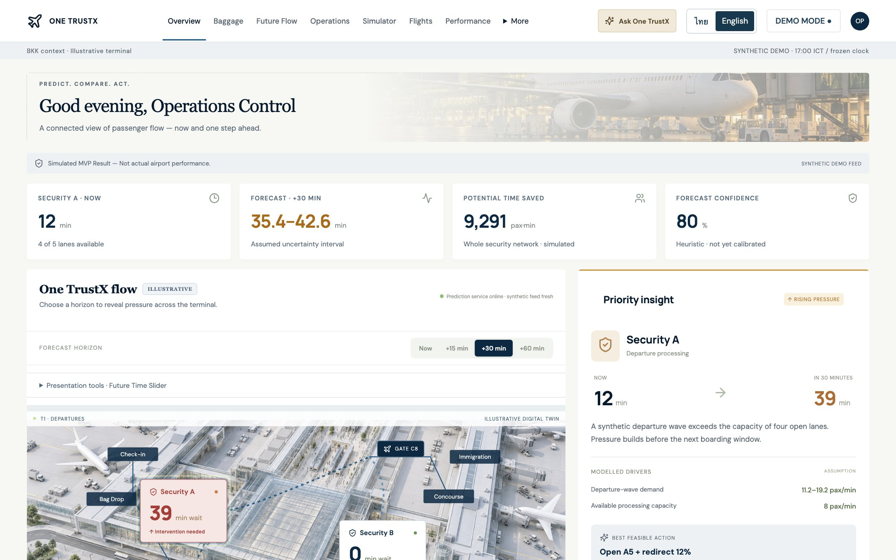
ใช้ทำอะไร: ดูภาพเดียวกับ Overview แต่เน้นแผนผัง เลือกดูตอนนี้ +15, +30 หรือ +60 นาที เพื่อเห็นว่าแรงกดดันย้ายไปที่ใด
ข้อควรรู้: แผนผังเป็นภาพประกอบ ไม่ใช่ผังของสุวรรณภูมิ ช่วงพยากรณ์ (บวกลบ 15% และ 2 นาที) เป็นสมมติฐาน
ใช้ทำอะไร: รวมสถานการณ์ทั้งหมดไว้ในตารางเดียว เรียงจากเร่งด่วนที่สุด กด Investigate เพื่อดูรายละเอียด แล้วไปต่อที่ Simulator
บนจอมีอะไร: ตารางสถานการณ์ (ระดับ / จุดที่เกิด / ผลกระทบ / ช่วงเวลา) และแผนผังสาเหตุที่แบ่งผลระหว่างปริมาณผู้โดยสาร (+31.7 นาที) กับจำนวนเลนที่ลดลง (+7.3 นาที)
คำนวณอย่างไร: แบ่งผลด้วยวิธี Shapley สองปัจจัยภายในแบบจำลอง หน้าจอติดป้ายว่า NOT CAUSAL PROOF คือไม่ใช่การพิสูจน์สาเหตุในโลกจริง
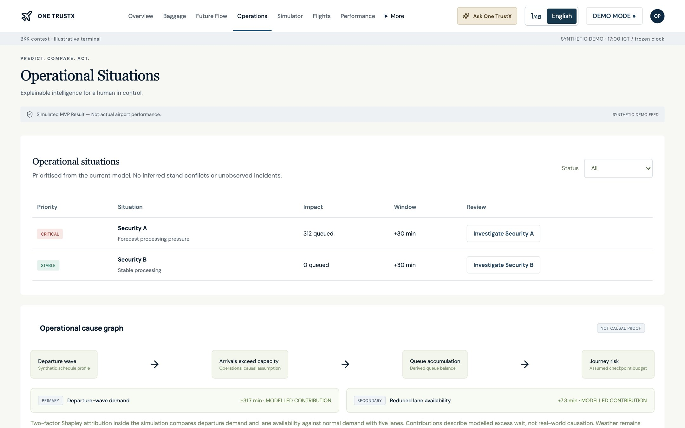
ใช้ทำอะไร: ทดลองก่อนตัดสินใจ รันผู้โดยสารชุดเดียวกันผ่านมาตรการ 4 แบบ แล้วเทียบผล
บนจอมีอะไร: สามขั้น (สถานการณ์ / เลือกกลยุทธ์ / เทียบและทบทวน) ตารางเทียบก่อนและหลัง เช่น เวลารอเฉลี่ย 20.4 → 9.8 นาที คิวสูงสุด 327 → 197 คน ใช้พนักงานเพิ่ม 2 คน
คำนวณอย่างไร: จำลองผู้โดยสารเป็นกลุ่มตามลำดับมาก่อนได้ก่อน ให้คะแนนแต่ละมาตรการจากเวลารอที่ลด นาทีที่ประหยัด และสัดส่วนผู้โดยสารเสี่ยง หักด้วยพนักงาน ระยะเดิน และต้นทุนที่เพิ่ม มาตรการที่ทำไม่ได้ (เช่น พนักงานสำรองไม่พอ) ถูกตัดออก
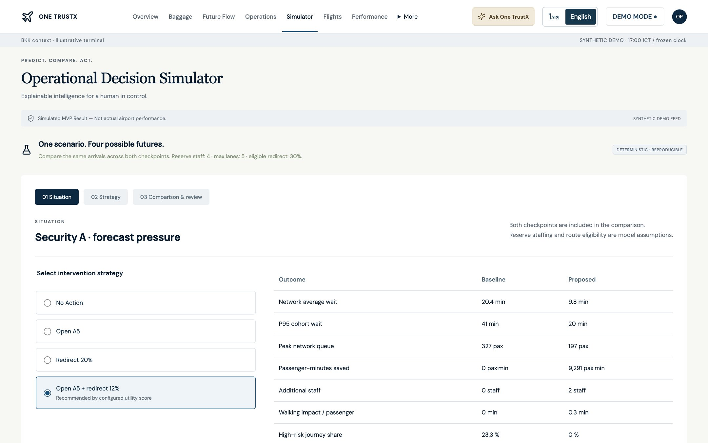
ใช้ทำอะไร: ดูว่าเที่ยวบินใดใช้จุดตรวจใด เพื่อเข้าใจว่าคิวที่จุดเดียวกระทบกี่เที่ยวบิน
บนจอมีอะไร: เที่ยวบินจำลอง 4 เที่ยว (DEMO401–404) เที่ยวละ 145 คน ทั้งหมดใช้ Security A กรองดูขาออก ขาเข้า หรือที่ล่าช้าได้
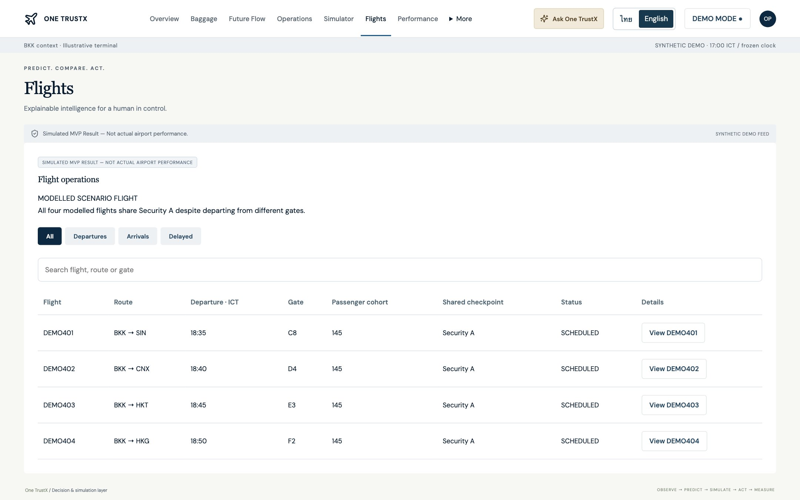
ใช้ทำอะไร: สรุปผลของมาตรการที่เลือก และแสดงความแม่นของแบบจำลองคิว
บนจอมีอะไร: ชั่วโมงผู้โดยสารที่ประหยัดได้ (154.8 ชั่วโมงในสถานการณ์เดียว) ตารางการใช้ทรัพยากรก่อนและหลัง และผลประเมินแบบจำลองทั้งชุดข้อมูลจำลองและข้อมูลจริงจากสหรัฐฯ แยกป้ายกัน
ข้อควรรู้: ตัวเลขเป็นผลของสถานการณ์เดียว ไม่ใช่ยอดสะสมรายวัน รายละเอียดการวัดอยู่ในส่วนที่ 4
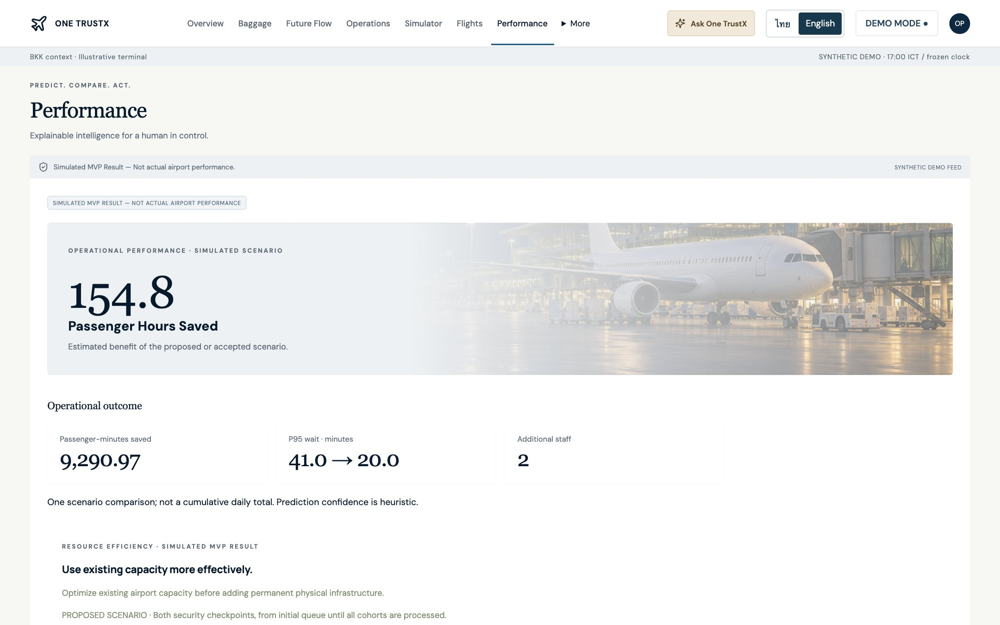
ใช้ทำอะไร: ดูเส้นทางของผู้โดยสารทั้ง 580 คนผ่านอาคาร ตั้งแต่มาถึง check-in ฝากกระเป๋า จุดตรวจ ตรวจคนเข้าเมือง จนถึง gate
บนจอมีอะไร: แผนภาพการไหล ความหนาของเส้นแทนจำนวนคน ผู้โดยสารในประเทศ 290 คนข้ามขั้นตรวจคนเข้าเมือง
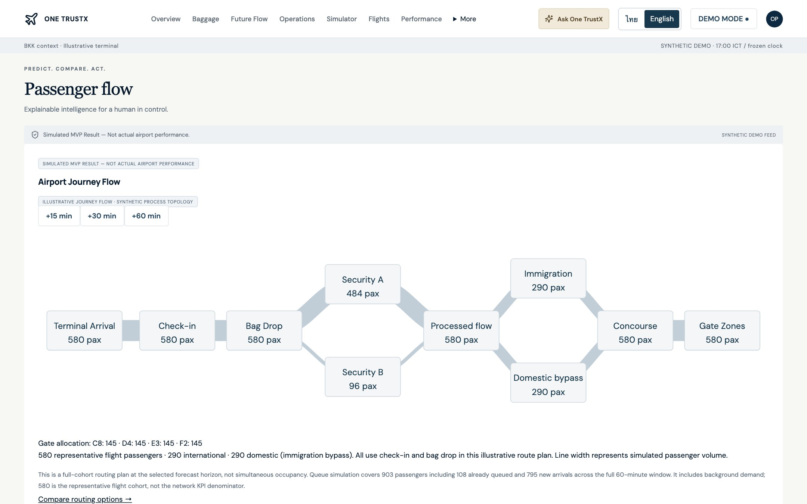
ใช้ทำอะไร: มุมของผู้โดยสาร บอกว่าเหลือเวลาอย่างปลอดภัยกี่นาที และควรเดินเส้นทางใด
คำนวณอย่างไร: เวลาปลอดภัย = เวลาถึงปิดขึ้นเครื่อง − เวลาเดินและผ่านจุดตรวจที่เหลือ − เวลาสำรอง 10 นาที ตัวอย่างบนจอ: 64 − 20 − 10 = 34 นาที ถ้า gate เปลี่ยนจาก C8 เป็น E7 เส้นทางที่เข้าถึงได้ยาวขึ้น 23 นาที เหลือ 11 นาที และระบบวางเส้นทางใหม่ให้
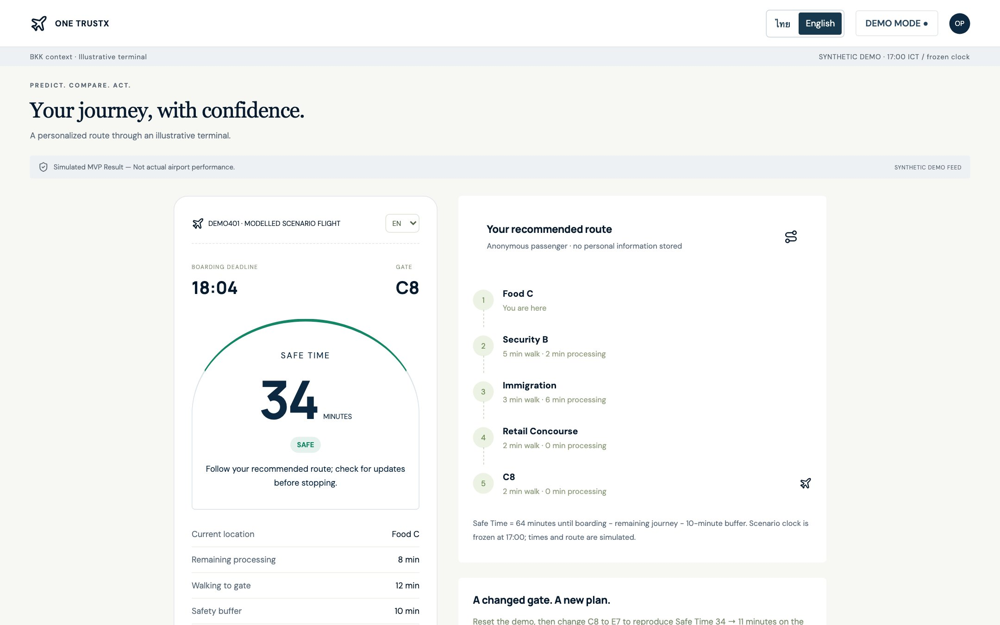
ใช้ทำอะไร: ติดตามวงจรของการตัดสินใจหนึ่งครั้ง ตั้งแต่ระบบแนะนำ คนอนุมัติหรือปฏิเสธ จนถึงการวัดผลหลังดำเนินการ
บนจอมีอะไร: รายการการตัดสินใจในรอบนั้น และช่องบันทึกเวลารอที่สังเกตได้หลังทำ เพื่อเทียบกับที่พยากรณ์ไว้ ค่าที่กรอกในเดโมถูกติดป้ายว่าเป็นค่าจำลอง
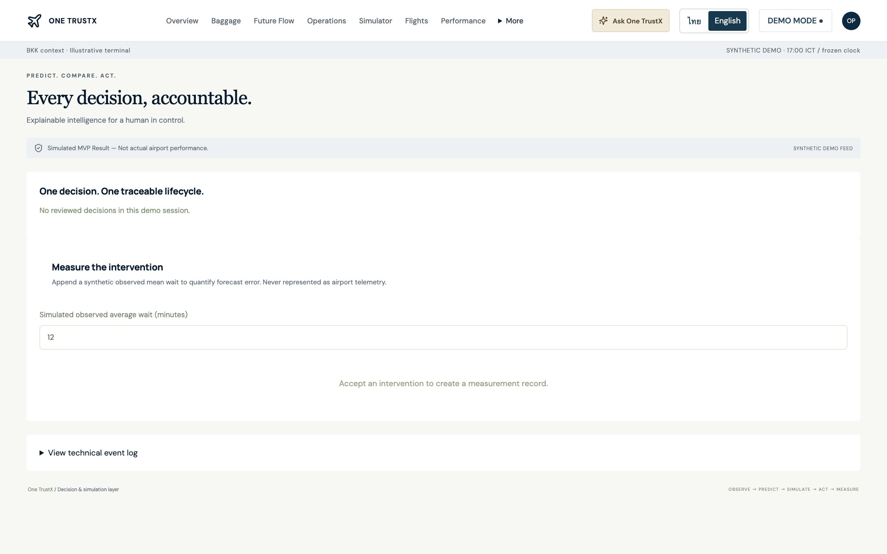
ใช้ทำอะไร: ให้ผู้ใช้และกรรมการตรวจได้ว่าตัวเลขแต่ละตัวมาจากข้อมูลประเภทใด
บนจอมีอะไร: คำอธิบายสี่ประเภทข้อมูล (จำลอง / ผลคำนวณ / สมมติฐาน / ข้อมูลจริงสาธารณะ) สถานะความสดของแต่ละแหล่ง และข้อมูลบริบทย้อนหลัง
ข้อควรรู้: หน้านี้เคยเปิดไม่ขึ้นบนเว็บจริง เพราะเซิร์ฟเวอร์ไม่มีไฟล์ผลเปรียบเทียบชุดหนึ่ง แก้แล้วในรอบนี้ ข้อมูลสาธารณะบางชุดจึงแสดงว่าไม่มีบนเว็บ
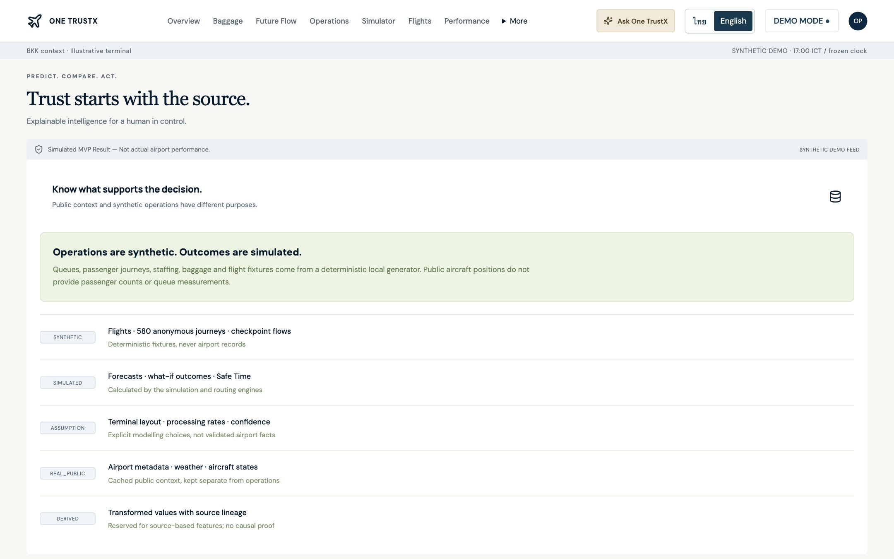
ใช้ทำอะไร: อธิบายว่า One TrustX จะเชื่อมกับระบบจริงอย่างไร ระบุว่าตัวเชื่อมกับ AODB, Smart Flow, ระบบ gate, กระเป๋า และงานภาคพื้นเป็นแนวคิดสำหรับอนาคต ส่วนที่เชื่อมจริงในต้นแบบคือข้อมูลสาธารณะและตัวสร้างข้อมูลจำลอง
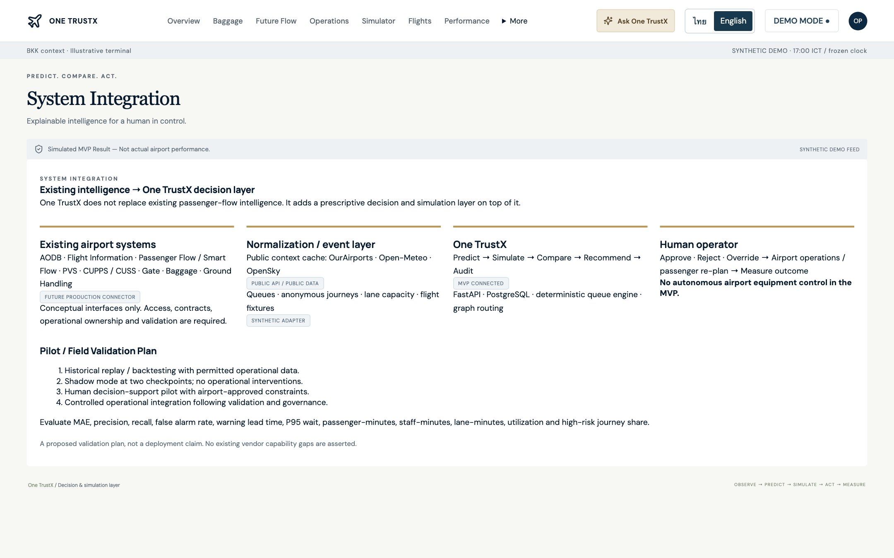
Guided demonstration: เดโม 9 ขั้นที่ผู้นำเสนอกดเดินเอง ตั้งแต่สถานะปกติ คลื่นผู้โดยสารเริ่ม ตรวจพบความแออัดล่วงหน้า เทียบมาตรการ คนอนุมัติ ผลต่อผู้โดยสาร เปลี่ยน gate จนถึงวัดผล ไม่มีการอนุมัติอัตโนมัติ
Ask One TrustX: ปุ่มถามคำถามเกี่ยวกับสถานการณ์ ตอบจากผลของแบบจำลองตามหัวข้อที่กำหนดไว้ และปฏิเสธหัวข้อนอกขอบเขต ไม่ได้ใช้ LLM
DEMO MODE: ปุ่มควบคุมเดโม เช่น เริ่มคลื่นผู้โดยสาร ปิดเลน เปลี่ยน gate และทดสอบข้อมูลไม่สด
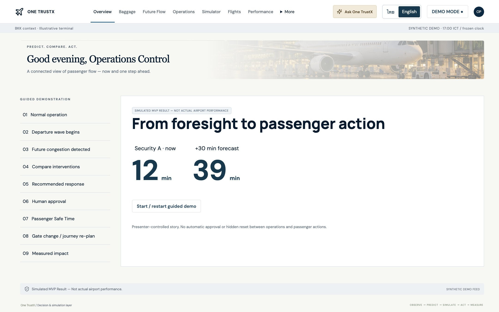
โมดูลหลักของรอบนี้ อธิบายแยกทั้งภาค ข
ส่วนนี้ครอบคลุมโมดูลคิว การจำลองมาตรการ และมุมผู้โดยสาร ซึ่งมีมาตั้งแต่เวอร์ชันบน GitHub รอบนี้ไม่ได้แก้ตรรกะของโมดูลเหล่านี้ ตัวเลขมาจากไฟล์ผลประเมินใน repository ที่สร้างไว้เมื่อ 12–13 ก.ย. 2026 ไม่ได้รันใหม่ในรอบนี้ ข้อมูลของโมดูลกระเป๋าอยู่ในภาค ข
| แหล่ง | จำนวนและช่วงเวลา | ใช้ทำอะไร | ข้อจำกัด |
|---|---|---|---|
| CBP Airport Wait Times (สหรัฐฯ) | 12,186 รายการ รายชั่วโมงต่ออาคาร ที่ JFK, LAX, SFO ม.ค.–มี.ค. 2025 | ตัวเทียบภายนอกของเวลารอคิวตรวจคนเข้าเมือง | คนละประเทศและคนละกระบวนการ ใช้แทนข้อมูล BKK ไม่ได้ |
| BTS On-Time Performance (สหรัฐฯ) | 504,884 เที่ยวบิน ก.พ. 2025 | การกระจายของความล่าช้า | เที่ยวบินในประเทศสหรัฐฯ เท่านั้น ข้อมูลขาด 17.8% |
| CAAT สถิติรายวัน (ไทย) | 7 ไฟล์ ก.ย. 2023–เม.ย. 2025 ได้ยอดรวมประเทศ 188 วัน และยอด BKK รายวัน 3 วัน | ขนาดของปริมาณผู้โดยสารไทย | CAAT ระบุว่าเป็นข้อมูลเบื้องต้น และไม่ต่อเนื่องทุกวัน |
| Open-Meteo | 8,760 ชั่วโมง ปี 2025 ที่ BKK | บริบทสภาพอากาศ | เป็นผลจากแบบจำลองอากาศ ไม่ใช่เซนเซอร์ในสนามบิน |
| OurAirports | สนามบิน 145 แห่ง | พิกัดและข้อมูลอ้างอิงสนามบิน | ข้อมูลเปิดจากอาสาสมัคร ขาด 27.4% |
| UK CAA | 3 ตารางรายปี 2025 | ขนาดการปฏิบัติการของสนามบินเทียบเคียง | คนละประเทศ |
| OpenSky | ตำแหน่งอากาศยาน (ตัวเลือกเสริม) | บริบทการจราจรทางอากาศ | ไม่ใช่ตารางบิน ไม่มีข้อมูลผู้โดยสารหรือคิว |
ทุกไฟล์ที่ดึงมาเก็บ URL ต้นทาง เวลาที่ดึง ช่วงเวลาของข้อมูล เงื่อนไขการใช้ และ SHA-256 ไว้คู่กัน ถ้า checksum ไม่ตรง สคริปต์จะหยุดแทนการเขียนทับ รายละเอียดต่อไฟล์อยู่ใน docs/data-quality-report.md ข้อมูลของ AOT และ TSA ดึงไม่ได้ จึงไม่มีในระบบ และหน้า Data & sources แจ้งไว้
ข้อมูลจริงทั้งหมดไม่ถูกนำไปเปลี่ยนชื่อเป็นข้อมูลปฏิบัติการของ BKK และไม่ถูกใช้เพิ่มความมั่นใจของผลจำลอง
| ชุดข้อมูล | จำนวน | สร้างอย่างไร |
|---|---|---|
ประวัติคิวสำหรับฝึกและทดสอบ (training.csv) |
20,160 นาที (14 วัน) | คิวเริ่มต้น 40 คน ผู้โดยสารเข้าตามคลื่นไซน์บวกสัญญาณรบกวน เลขสุ่ม 42 จำนวนเลนสลับ 3 และ 4 |
การเดินทางของผู้โดยสาร (passenger_journey.csv) |
580 แถว ไม่ระบุตัวตน | 4 เที่ยวบิน เที่ยวละ 145 คน |
การไหลของผู้โดยสาร (passenger_flow.csv) |
72 แถว | โปรไฟล์ผู้โดยสารเข้าต่อช่วง 15 นาที |
| เที่ยวบิน gate งานภาคพื้น | 4, 4 และ 28 แถว | ชุดตัวอย่างคงที่สำหรับเล่าเรื่อง |
| สถานะเลนและจุดตรวจ | 21 และ 6 แถว | Security A มี 5 เลน เปิด 4 / Security B มี 3 เลน |
แผนผังอาคาร (airport_graph.csv) |
16 เส้นเชื่อม | อาคารสมมติ ระยะเดินกำหนดเอง ไม่ใช่ผังสุวรรณภูมิ |
สถานการณ์ตั้งต้นที่เห็นบนหน้า Overview: เวลาหยุดนิ่งที่ 17:00 Security A มีคิวรอ 12 นาที ผู้โดยสารเข้า 11.2, 19.2, 9 และ 1.6 คนต่อนาทีในแต่ละช่วง 15 นาที แต่ละเลนให้บริการ 2 คนต่อนาที ค่าเหล่านี้เป็นสมมติฐานทั้งหมด และระบุไว้ใน docs/assumptions.md
ชุดที่ 1 ข้อมูลจำลอง 14 วัน แบ่งตามเวลา 70% แรกใช้ฝึก 30% หลังใช้ทดสอบ เว้นช่วง 60 นาทีระหว่างกัน ไม่สุ่มสลับ ตารางแสดงความคลาดเคลื่อนเฉลี่ย (นาที)
| วิธี | ล่วงหน้า 15 นาที | ล่วงหน้า 30 นาที | ล่วงหน้า 60 นาที |
|---|---|---|---|
| ใช้ค่าปัจจุบันต่อไป (persistence) | 5.97 | 11.70 | 22.56 |
| ค่าเฉลี่ยเคลื่อนที่ | 8.81 | 14.41 | 25.17 |
| สมดุลการไหล (ที่ระบบใช้) | 2.20 | 4.57 | 10.34 |
| Linear regression | 4.27 | 5.91 | 9.34 |
| Random forest | 1.75 | 3.21 | 6.13 |
เทียบกับเป้าที่ทีมตั้งไว้ (ไม่ใช่มาตรฐานอุตสาหกรรม):
| เป้า | 15 นาที | 30 นาที | 60 นาที |
|---|---|---|---|
| คลาดเคลื่อนเฉลี่ยไม่เกิน 5 นาที | ผ่าน (2.20) | ผ่าน (4.57) | ไม่ผ่าน (10.34) |
| จับภาวะแออัดได้อย่างน้อย 80% | ผ่าน (99%) | ผ่าน (98%) | ผ่าน (95%) |
| เตือนล่วงหน้าอย่างน้อย 15 นาที | ไม่ผ่าน (14) | ผ่าน (29) | ผ่าน (58) |
Random forest แม่นกว่าบนข้อมูลจำลอง แต่ทีมไม่ได้นำมาใช้ เพราะข้อมูลทดสอบสร้างจากกลไกเดียวกับแบบจำลอง ผลจึงยังไม่ใช่หลักฐานอิสระ
ชุดที่ 2 ข้อมูลจริงจาก CBP 12,178 รายการ ฝึกด้วย ม.ค. ตรวจด้วย ก.พ. ทดสอบด้วย มี.ค. 2025 เป็นการประมาณเวลารอในชั่วโมงเดียวกัน ไม่ใช่การพยากรณ์ล่วงหน้า เวลารอจริงมีค่ากลาง 17 นาที และ 10% ของชั่วโมงรอเกิน 37 นาที
| วิธี | คลาดเคลื่อนเฉลี่ย (นาที) | F1 ของการจับภาวะแออัด | อัตราเตือนผิด |
|---|---|---|---|
| ใช้ค่าปัจจุบันต่อไป | 8.40 | 0.52 | 10.6% |
| ค่าเฉลี่ยเคลื่อนที่ | 8.53 | 0.43 | 9.6% |
| ตัวแทนภาระต่อช่องตรวจ | 19.36 | 0.29 | 19.3% |
| Linear regression | 8.44 | 0.12 | 4.6% |
| Random forest | 7.96 | 0.26 | 5.8% |
บนข้อมูลจริง ไม่มีวิธีใดดีกว่าวิธีพื้นฐานอย่างชัดเจน จึงไม่มีแบบจำลองใดถูกยกขึ้นใช้งาน ผลนี้ใช้ยืนยันเพียงว่าช่วงเวลารอในระบบจำลอง (12–39 นาที) อยู่ในช่วงที่พบได้จริง
| ชุดทดสอบ | จำนวน | ตรวจอะไร |
|---|---|---|
test_engine.py |
10 ข้อ | สมดุลของคิว ผลของแต่ละมาตรการ การทำซ้ำได้ |
test_api.py |
8 ข้อ | endpoint การตรวจสิทธิ์ ข้อมูลไม่สด การบันทึกการตัดสินใจ |
test_pilot.py |
5 ข้อ | ขั้นตอนการทดลองใช้งาน |
ทั้งหมดผ่านในการรันล่าสุดเมื่อ 8 ต.ค. 2026 (รวมอยู่ใน 45 ข้อของส่วนที่ 6)
| Endpoint | หน้าที่ |
|---|---|
GET /api/trustx/baggage/scenarios |
รายการสถานการณ์และเวลาที่เลือกดูได้ |
GET /api/trustx/baggage/control |
ผลประเมิน รับ scenario, at, seed, resource_feed |
GET /api/trustx/baggage/calibration |
ค่าทุกตัวพร้อมประเภทและแหล่งที่มา |
GET /api/trustx/baggage/evaluation |
ผลจำลอง 30 รอบ |
GET /api/trustx/flights/{id}/shared-state |
สถานะร่วมเดิม ช่อง baggage_control คืนผลประเมินสถานการณ์น้ำท่วม |
เทคโนโลยี: React + TypeScript + Vite / FastAPI + Python / PostgreSQL หรือ SQLite สำหรับส่วนเดิม ส่วนกระเป๋าไม่เขียนฐานข้อมูล คำนวณจากเลขสุ่มและไฟล์ค่าตั้งต้น จึงทำซ้ำได้ทุกครั้ง ระบบไม่ใช้ LLM ในการตัดสินใจ
onetrustx/
├── README.md
├── run-local.sh เปิดระบบบนเครื่องโดยไม่ใช้ Docker
├── infra/docker-compose.yml PostgreSQL + API + frontend
├── backend/
│ ├── app/
│ │ ├── baggage_flow.py แบบจำลอง ตัวประเมิน และการให้คะแนน (ใหม่)
│ │ ├── baggage_calibration.json ค่าตั้งต้นพร้อมแหล่งที่มา (ใหม่)
│ │ ├── baggage_metrics.py ตารางคะแนนและการใส่ข้อมูลผิดเพื่อทดสอบ (ใหม่)
│ │ ├── baggage_evaluation.json ผลจำลอง 30 รอบ (ใหม่)
│ │ ├── trust_api.py REST API ของ One TrustX
│ │ ├── trust_service.py ชุดเหตุการณ์ TT401 และสถานะร่วม
│ │ ├── trust_models.py ตารางฐานข้อมูลส่วน One TrustX
│ │ ├── main.py, engine.py โมดูลคิวผู้โดยสารเดิม
│ │ └── public_*.py ข้อมูลบริบทสาธารณะ
│ └── tests/
│ ├── test_baggage_flow.py 15 ข้อ (ใหม่)
│ ├── test_baggage_metrics.py 4 ข้อ (ใหม่)
│ └── test_trustx.py, test_api.py, test_engine.py, test_pilot.py
├── frontend/src/
│ ├── App.tsx โครงระบบและแถบนำทาง (เพิ่มเมนู Baggage)
│ ├── components/BaggageControl.tsx หน้ากระเป๋า (ใหม่)
│ ├── executive.css สไตล์ของระบบ รวมส่วนหน้ากระเป๋า
│ └── locales/th.json คำแปลภาษาไทย
├── data/
│ ├── external/ ไฟล์ต้นฉบับจากแหล่งสาธารณะ พร้อม checksum
│ ├── normalized/ ข้อมูลสาธารณะที่จัดรูปแล้ว
│ ├── synthetic/baggage_flow/ รายการสแกนและตารางบินจำลอง (ใหม่)
│ └── scenarios/scenario_library.json
├── scripts/
│ ├── experiments/run_baggage_evaluation.py ส่งออกข้อมูลและให้คะแนน (ใหม่)
│ ├── data/fetch_weather_incident.py ดึงฝนช่วงเหตุการณ์ (ใหม่)
│ └── render_data_pdf.py สร้าง PDF ภาษาไทย
└── docs/
├── onetrustx-system-report-th.md/pdf เอกสารนี้
├── preliminary-pitch-th.md โครง pitch 7 นาที
├── data-provenance-th.md คู่มือโครงการฉบับก่อน
└── decisions/ บันทึกเหตุผลการตัดสินใจ
| รายการ | ผล | วันที่ |
|---|---|---|
Backend tests (pytest) |
ผ่าน 45 ข้อ | 8 ต.ค. 2026 |
Lint (ruff check app) |
ผ่าน | 8 ต.ค. 2026 |
Frontend type-check (tsc --noEmit) |
ผ่าน | 8 ต.ค. 2026 |
Frontend tests (vitest) |
ผ่าน 2 ข้อ | 8 ต.ค. 2026 |
Production build (npm run build) |
ผ่าน | 8 ต.ค. 2026 |
เปิดหน้า /baggage ในเบราว์เซอร์ ครบ 5 สถานการณ์ ทั้งภาษาอังกฤษและไทย |
แสดงผลถูกต้อง ไม่มี error ใน console หน้าเดิมทุกหน้ายังเปิดได้ | 8 ต.ค. 2026 |
สิ่งที่เทสต์ตรวจโดยเฉพาะ:
ตรวจบนเว็บจริงหลัง deploy: เปิดครบ 14 หน้ารวม Baggage ไม่มี error ใน console
ยังไม่ได้ตรวจ: Docker stack และ Playwright e2e ข้อความที่มาจาก backend (เช่น คำแนะนำและหลักฐาน) ยังแสดงเป็นภาษาอังกฤษในโหมดไทย และแถบเมนูบนจอมือถือล้นขอบ 81 พิกเซลทุกหน้า ซึ่งเป็นอยู่ก่อนแล้ว
เว็บ onetrustx.vercel.app ประกอบด้วยสองโปรเจกต์บน Vercel และ deploy ด้วยคำสั่งจากเครื่องพัฒนา ไม่ได้ผูกกับ GitHub
| ส่วน | โปรเจกต์บน Vercel | ที่อยู่ |
|---|---|---|
| หน้าเว็บ | airport-timetwin-frontend |
onetrustx.vercel.app |
| API | backend |
backend-mauve-six-34.vercel.app (หน้าเว็บเรียกผ่าน /api) |
ขั้นตอนที่ใช้เมื่อ 8 ต.ค. 2026:
backend รัน vercel --prod แล้วตรวจว่า /api/trustx/baggage/scenarios ตอบ 200frontend รัน vercel --prodvercel alias set <ชื่อ deployment ใหม่> onetrustx.vercel.appเวอร์ชันที่โดเมนชี้อยู่คือ airport-timetwin-frontend-9drl3b0in ถ้าต้องย้อนกลับไปเวอร์ชันก่อนมีหน้า Baggage ให้ชี้โดเมนไปที่ airport-timetwin-frontend-72mipagqy
ข้อควรระวัง: โค้ดที่อยู่บนเว็บตอนนี้ยังไม่ได้ commit และ push ขึ้น GitHub จึงมีอยู่เฉพาะในเครื่องพัฒนาและบน Vercel ชื่อโปรเจกต์บน Vercel และชื่อฐานข้อมูล Postgres ยังใช้ชื่อเดิม (timetwin) เพราะการเปลี่ยนจะกระทบข้อมูลและการผูกโดเมน
Pain Point → Solution → Impact โครงเดิมจากรอบแรก ลงลึกจนคำนวณได้จริงในเรื่องกระเป๋า
โครงของโครงการยังเป็นโครงเดิมจากรอบแรก (สไลด์ 3 หน้า: Pain Point, Solution, Impact) รอบนี้ไม่ได้เปลี่ยนโครง แต่เลือกเรื่องกระเป๋าเป็นกรณีที่ลงลึกจนคำนวณได้จริง ตามคำแนะนำของ mentor ให้เลือกปัญหาเดียว
| โครงเดิม (สไลด์รอบแรก) | ข้อความเดิม | ลงลึกเรื่องกระเป๋าอย่างไร | อยู่ในส่วนที่ |
|---|---|---|---|
| Pain Point | หลายองค์กร หลายระบบ ข้อมูลไม่ได้อยู่บนมาตรฐานเดียวกัน การตัดสินใจจึงช้า | กระเป๋าค้างสะสมเมื่อเกิดเหตุผิดปกติ ข้อมูลสแกน ตารางบิน และกำลังคนอยู่คนละฝ่าย | 8–9 |
| Solution | Data Integration Layer → Trusted Shared Event Ledger → Common Operation State → AI Decision Intelligence | สี่ชั้นเดิม ใช้กับข้อมูลกระเป๋าจริง ๆ ทีละชั้น | 10–13 |
| Impact | Trust · Intelligence · Operation และคุณค่าต่อแต่ละฝ่าย | ตัวชี้วัดสามเสาเดิม วัดจากแบบจำลองกระเป๋า | 14–16 |
สไลด์รอบแรกระบุผู้มีส่วนเกี่ยวข้อง 7 กลุ่ม ในกรณีกระเป๋าแต่ละกลุ่มมีบทบาทดังนี้
| กลุ่ม | ข้อมูลที่ให้ | ได้อะไรกลับ | สถานะในต้นแบบ |
|---|---|---|---|
| Baggage Operator (BRS/BHS) | จำนวนสแกนรายขั้น รายเที่ยวบิน | เห็นว่าขั้นใดเป็นคอขวด | ใช้แล้ว (ข้อมูลจำลอง) |
| Airport (AODB) | เวลาออก เวลาจอด gate | เที่ยวบินใดเสี่ยงจากกระเป๋า | ใช้แล้ว (ข้อมูลจำลอง) |
| Airline | จำนวนกระเป๋าที่คาดไว้ และเที่ยวบินต่อ | กระเป๋าต่อเครื่องชุดใดเสี่ยง ควรรอหรือส่งตาม | ใช้แล้ว (ข้อมูลจำลอง) |
| Ground Handler | กำลังคน รถขนกระเป๋า | ลำดับเที่ยวบินที่ควรทำก่อน | ใช้แล้วเป็นส่วนเสริม |
| Cargo Operator | ยังไม่ใช้ | ยังไม่มี | ขั้นขยายถัดไป |
| Security / Immigration | ยังไม่ใช้กับกระเป๋า | ยังไม่มี | มีในโมดูลคิวผู้โดยสาร |
| ATC / Other (สภาพอากาศ) | ฝนรายชั่วโมง | บริบทของเหตุ | ใช้เป็นบริบท ยังไม่ใช้เตือน |
ข้อเสนอสำหรับสองข้อแรก: แก้คำบนสไลด์ให้ตรงกับระบบ คือใช้คำว่า "บันทึกเหตุการณ์ร่วมที่ตรวจย้อนได้" แทน blockchain และ "กฎการตัดสินใจที่ตรวจย้อนได้" แทนโลโก้ ChatGPT เพราะทำได้ทันทีและตอบคำถามกรรมการได้ตรง ถ้าทีมต้องการคง blockchain หรือ LLM ไว้ ต้องพัฒนาส่วนนั้นจริงก่อนนำเสนอ
สิ่งที่ยังขาดเมื่อเทียบกับโครงเดิม และควรทำในรอบ prototype:
SITA Baggage IT Insights 2026 รายงานข้อมูลปี 2025 ว่า:
คำว่า mishandled หมายถึงล่าช้า เสียหาย หรือส่งผิดปลายทาง ไม่ได้แปลว่าหายถาวร ตัวเลข 33.4 ล้านใบที่ SKY อ้างในวัน Kick-off เป็นข้อมูลปี 2024
ปลายเดือนกันยายน 2026 ที่ท่าอากาศยานสุวรรณภูมิ:
| วันที่ | สิ่งที่เกิดขึ้น | แหล่ง |
|---|---|---|
| 25 ก.ย. | ฝนที่จุดใกล้สนามบิน 116.1 มม. ในวันเดียว | Open-Meteo (ข้อมูลจริง) |
| 26 ก.ย. | CAAT ออกประกาศ 30/2569 ว่าฝนและน้ำท่วมขังกระทบการเดินทางเข้าออกสนามบิน | CAAT |
| 26–27 ก.ย. | พนักงานภาคพื้นของการบินไทยเดินทางมาทำงานไม่ได้ รถขนกระเป๋าบางส่วนเสีย เที่ยวบินขาออกล่าช้า ผู้โดยสารขาเข้ารอกระเป๋านาน | The Nation |
| 28 ก.ย. | กองทัพส่งกำลังพล 131 นายมาช่วย | The Nation |
| 29 ก.ย. | CEO การบินไทยระบุว่ามีกระเป๋าค้างประมาณ 5,000 ใบ | The Nation |
| 30 ก.ย. | สะสมกว่า 10,000 ใบช่วง 26–29 ก.ย. คืนแล้วประมาณ 1,800 ใบ เหลือประมาณ 8,000 ใบ งดรับ cargo 30 ก.ย.–6 ต.ค. และลดเที่ยวบิน | The Star / Bernama |
| 3–4 ต.ค. | เหลือ 1,092 ใบ | The Nation |
มีแหล่งข่าวหรือข้อมูลจริงรองรับ ไม่มีตัวเลขเผยแพร่ ทีมต้องสมมติ
เหตุการณ์นี้ใช้เป็นหลักฐานว่าลำดับเหตุ "ฝน → คนมาไม่ได้ → กำลังการจัดการลด → กระเป๋าค้าง → เที่ยวบินได้รับผล" เกิดขึ้นจริง ไม่ใช่ข้อมูลนำเข้าของระบบ และไม่ใช่ผลงานของ One TrustX
ในเหตุการณ์จริง ทุกฝ่ายรู้ว่าคนไม่พอ สิ่งที่ยากคือการตัดสินใจภายใต้กำลังที่ลดลง: เที่ยวบินไหนต้องช่วยก่อน กระเป๋าต่อเครื่องชุดไหนเสี่ยงที่สุด และเมื่อใดที่การเร่งงานไม่พอแล้วต้องลดภาระ เช่น ชะลอเที่ยวบินหรือส่งกระเป๋าตามไปเที่ยวถัดไป ข้อมูลที่ใช้ตอบคำถามเหล่านี้อยู่คนละระบบ (การสแกนกระเป๋า ตารางบิน กำลังคน) One TrustX นำมารวมเป็นภาพเดียวและจัดลำดับให้
ระบบไม่ได้สร้างพนักงานเพิ่ม และเอกสารนี้ไม่อ้างว่าเหตุการณ์จริงจะจบเร็วขึ้นถ้ามีระบบนี้
| บทบาท | ใช้ระบบทำอะไร |
|---|---|
| Baggage / Ground Operations Controller (ผู้ใช้หลัก) | ดูว่าติดที่ขั้นไหน จัดลำดับเที่ยวบิน อนุมัติคำแนะนำ |
| Airline Operations Control | ตัดสินใจรอหรือไม่รอกระเป๋า และการส่งกระเป๋าตามไป |
| Airport Operations | เห็นภาพรวมข้ามฝ่าย |
| ผู้โดยสาร | ได้ประโยชน์ทางอ้อม ไม่ได้ใช้ระบบ |
คำถามที่ต้องตอบตรง ๆ: เหตุการณ์ ก.ย. 2026 เกิดจากพนักงานเดินทางมาไม่ได้ ซึ่งซอฟต์แวร์แก้ไม่ได้ แล้ว One TrustX ช่วยอะไร
เมื่อคนเหลือครึ่งเดียว คำถามเปลี่ยนจาก "ทำอย่างไรให้ทัน" เป็น "ใช้กำลังที่เหลือกับอะไรก่อน" ระบบช่วยสามเรื่อง:
| เรื่อง | ถ้าไม่มีภาพรวม | สิ่งที่ระบบให้ |
|---|---|---|
| จัดลำดับ | แต่ละทีมทำเที่ยวบินของตัวเอง กำลังถูกใช้กับเที่ยวบินที่ยังมีเวลา ขณะที่เที่ยวบินที่ใกล้ปิดขาดคน | ลำดับเที่ยวบินตามเวลาปิดห้องเก็บสัมภาระ และจำนวนกระเป๋าต่อเครื่องที่เสี่ยง |
| รู้เร็วว่าเร่งไม่ทัน | รู้เมื่อกระเป๋าตกเที่ยวบินไปแล้ว | เตือนเมื่อกระเป๋าที่รอโตเร็วกว่าอัตราที่เคลียร์ได้ พร้อมข้อความว่าการจัดลำดับอย่างเดียวไม่พอ ให้พิจารณาลดภาระ |
| ภาพเดียวกันทุกฝ่าย | สายการบิน ground handler และสนามบินถือตัวเลขคนละชุด | จำนวนกระเป๋ารอรายขั้นและรายเที่ยวบินชุดเดียว ใช้ตัดสินใจร่วมและแจ้งผู้โดยสาร |
เรื่องที่สองเชื่อมกับเหตุการณ์จริงโดยตรง: มาตรการลดภาระ (งดรับ cargo และลดเที่ยวบิน) ถูกรายงานเมื่อ 30 ก.ย. ซึ่งเป็นวันที่ห้าของเหตุการณ์ หลังกระเป๋าสะสมเกิน 10,000 ใบ ระบบที่แสดงทุก 5 นาทีว่ากระเป๋ารอเพิ่มขึ้นเร็วกว่าที่เคลียร์ได้ จะให้ข้อมูลสำหรับตัดสินใจเรื่องนี้ตั้งแต่ชั่วโมงแรก ๆ ส่วนจะตัดสินใจเร็วขึ้นจริงหรือไม่ ขึ้นกับผู้มีอำนาจ ไม่ใช่ระบบ
ในสถานการณ์น้ำท่วมจำลอง 30 รอบ (กำลังคนเหลือ 55%):
ตัวเลขนี้ขึ้นกับสมมติฐานว่าวิธีเดิมคือการแบ่งกำลังเท่ากัน ถ้า ground handler จริงจัดลำดับได้ดีอยู่แล้ว ประโยชน์จะน้อยกว่านี้ นี่คือข้อที่ต้องถามผู้เชี่ยวชาญก่อนรอบ prototype
ต้นเหตุคือคนมาไม่ถึง ฝนตก 116 มม. ในวันที่ 25 ก.ย. หนึ่งวันก่อนเหตุการณ์เริ่ม ระบบปัจจุบันมีข้อมูลฝนนี้เป็นบริบทเท่านั้น ยังไม่ได้ใช้เตือนล่วงหน้า ขั้นถัดไปที่ควรทำคือเตือนความเสี่ยงด้านกำลังคนจากพยากรณ์ฝนและน้ำท่วมถนน เพื่อให้ผู้จัดการกะเตรียมการได้ก่อน เช่น ให้พนักงานพักใกล้สนามบินหรือจัดรถรับส่ง ส่วนนี้ยังเป็นแผน ไม่มีในระบบ
ระบบไม่ได้แก้ปัญหาคนมาไม่ได้ แต่ช่วยให้ใช้คนที่เหลือกับเที่ยวบินและกระเป๋าที่สำคัญที่สุดก่อน และบอกให้รู้ตั้งแต่ต้นว่าเมื่อใดการเร่งงานไม่พอและต้องลดภาระ ผลที่มีตอนนี้มาจากแบบจำลอง ยังต้องพิสูจน์กับข้อมูลจริง
Solution ของ One TrustX ยังเป็นสี่ชั้นเดิม ส่วนนี้แสดงว่าแต่ละชั้นทำอะไรกับข้อมูลกระเป๋า รายละเอียดของแต่ละชั้นอยู่ในส่วนที่ 11–13
| ชั้นเดิม | ทำอะไรกับกระเป๋า | ทำแล้วแค่ไหน |
|---|---|---|
| 1. Data Integration Layer | รับจำนวนสแกนรายขั้น ตารางบิน จำนวนกระเป๋าที่คาดไว้ และข้อมูลกำลังคน แปลงเป็นรูปแบบเดียว: ขั้น เที่ยวบิน ประเภทกระเป๋า จำนวน เวลาเกิดเหตุ เวลาที่ได้รับ | ทำแล้วกับข้อมูลจำลอง ตัวเชื่อมกับระบบจริงยังเป็นแผน |
| 2. Trusted Shared Event Ledger | ทุกรายการมีป้ายที่มาและเวลาที่ได้รับ ตรวจว่าข้อมูลสดหรือไม่ ถ้าขั้นใดไม่มีสแกนใหม่ขณะมีกระเป๋ารอ จะไม่นำไปตัดสิน | ทำแล้วเรื่องที่มาและความสด การตรวจข้อมูลขัดแย้งระหว่างฝ่ายมีใน backend ของชุดเที่ยวบินเดียว ยังไม่ได้ใช้กับกระเป๋า ไม่ใช้ blockchain |
| 3. Common Operation State | สถานะเดียวที่ทุกฝ่ายเห็นตรงกัน: 6 ขั้นของกระเป๋า จำนวนที่รอ เวลารอ และสถานะรวม | ทำแล้ว คือหน้า Baggage |
| 4. AI Decision Intelligence | Detect หาคอขวด / Predict เที่ยวบินและกระเป๋าที่จะไม่ทัน / Recommend ลำดับที่ควรทำก่อน / Coordinate ระบุผู้รับผิดชอบและเส้นตาย | ทำแล้วด้วยกฎที่ตรวจย้อนได้ ยังไม่มีการส่งแจ้งเตือนไปยังแต่ละฝ่าย |
| ขั้นเดิม | คำถาม | วิธีทำ | ตัวอย่างจากสถานการณ์น้ำท่วม 08:30 |
|---|---|---|---|
| Detect | ติดที่ไหน | เวลารอของกระเป๋าใบแรกสุดในแต่ละขั้น เทียบเกณฑ์ | Loading รอ 35 นาที เกินเกณฑ์ 30 |
| Predict | จะกระทบอะไร | กระเป๋าที่เหลือเทียบกับอัตราโหลดจริง เรียงตามเวลาปิด | 3 เที่ยวบิน 60 ใบ ต่อเครื่อง 44 ใบ |
| Recommend | ทำอะไรก่อน | เที่ยวบินที่ปิดก่อนได้ก่อน | TT403 ก่อน แล้ว TT404, TT405 |
| Coordinate | ใครทำ ก่อนเมื่อใด | ระบุผู้รับผิดชอบตามขั้นที่ติด และเส้นตาย | Ground handler ก่อน 08:55 คนอนุมัติ |
หน้ากระเป๋าเป็นเมนู Baggage ในแถบนำทางเดียวกับ Overview, Future Flow, Operations, Simulator, Flights และ Performance ใช้หน้าตา ตัวเลือกภาษา และแถบแจ้งว่าเป็นข้อมูลจำลองแบบเดียวกับหน้าอื่น ที่อยู่คือ /baggage
หน้านี้อยู่บนเว็บจริงแล้วที่ onetrustx.vercel.app/baggage ภาพแรกแคปจากเว็บจริง ภาพขยายแต่ละสถานการณ์แคปจากระบบชุดเดียวกันบนเครื่องพัฒนา ภาพทั้งหมดเป็นข้อมูลจำลอง
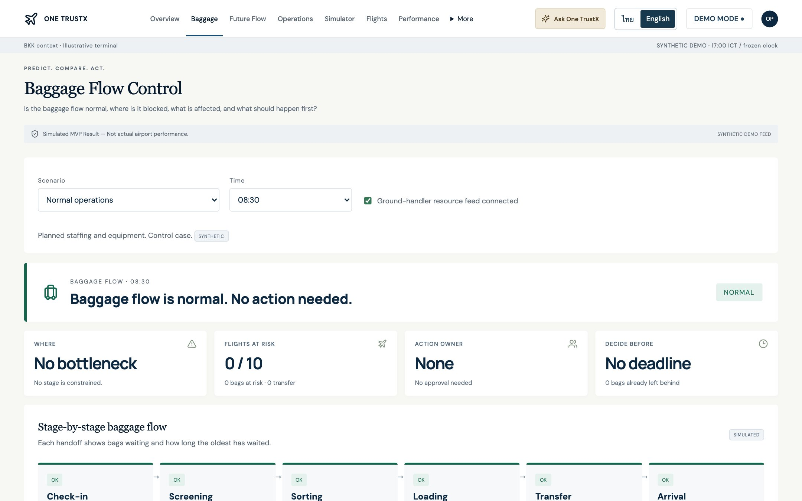
ขั้นที่ 1: เลือกสถานการณ์และเวลา เมื่อเลือก "Normal operations" ทุกขั้นเป็นสีเขียว สถานะรวมเป็น NORMAL และไม่มี action
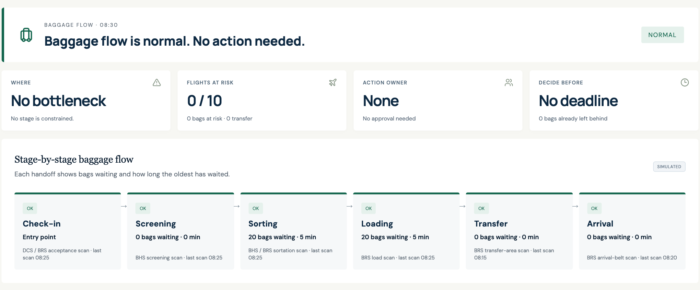
ขั้นที่ 2: ดูว่าติดที่ไหน เปลี่ยนเป็นสถานการณ์น้ำท่วม ขั้น Loading เปลี่ยนเป็น DELAY พร้อมจำนวนกระเป๋าที่รอและเวลาที่ใบแรกสุดรอมาแล้ว การ์ดสี่ใบตอบ ติดที่ไหน / กระทบกี่เที่ยวบิน / ใครรับผิดชอบ / ต้องตัดสินใจก่อนกี่โมง
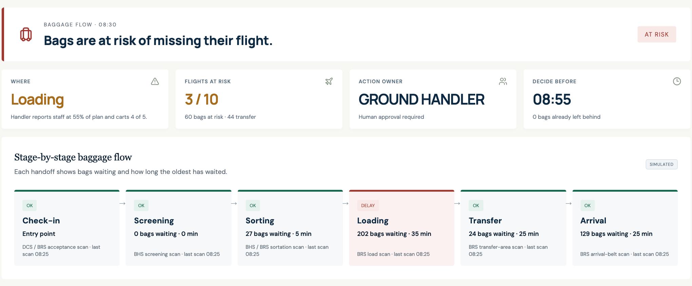
ขั้นที่ 3: อ่านเหตุผลและลำดับที่แนะนำ ด้านซ้ายคือหลักฐานที่ทำให้ระบบสรุปเช่นนั้น ด้านขวาคือคำแนะนำ ตารางล่างเรียงเที่ยวบินตามเวลาปิดห้องเก็บสัมภาระ ผู้ควบคุมงานเป็นผู้ตัดสินใจ
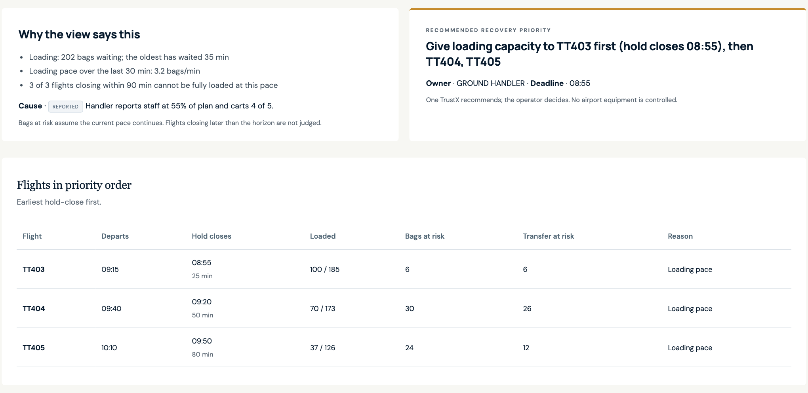
ขั้นที่ 4: ปิดข้อมูลกำลังคน เมื่อเอาเครื่องหมายถูกออก ระบบยังชี้ว่าติดที่ Loading ได้เหมือนเดิม แต่ช่องสาเหตุเปลี่ยนเป็น UNKNOWN นี่คือสิ่งที่ระบบทำได้ด้วยข้อมูลของ SKY เพียงอย่างเดียว
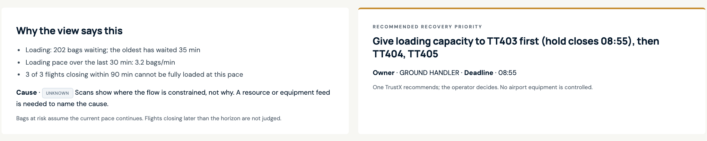
ขั้นที่ 5: สถานการณ์อื่น เครื่องคัดแยกขัดข้องทำให้คอขวดย้ายไปที่ Sorting ส่วนเที่ยวบินขาเข้าที่ช้าทำให้ขั้น Transfer ขึ้น RISK โดยไม่มีคอขวด เพราะปัญหาคือเวลาต่อเครื่องไม่พอ
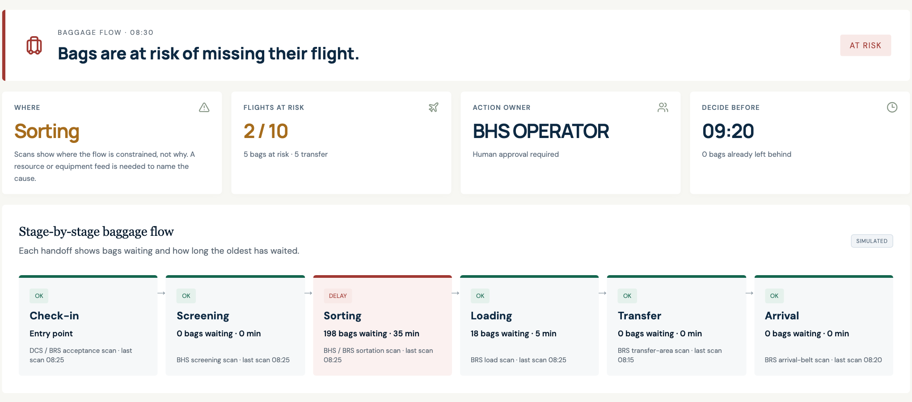
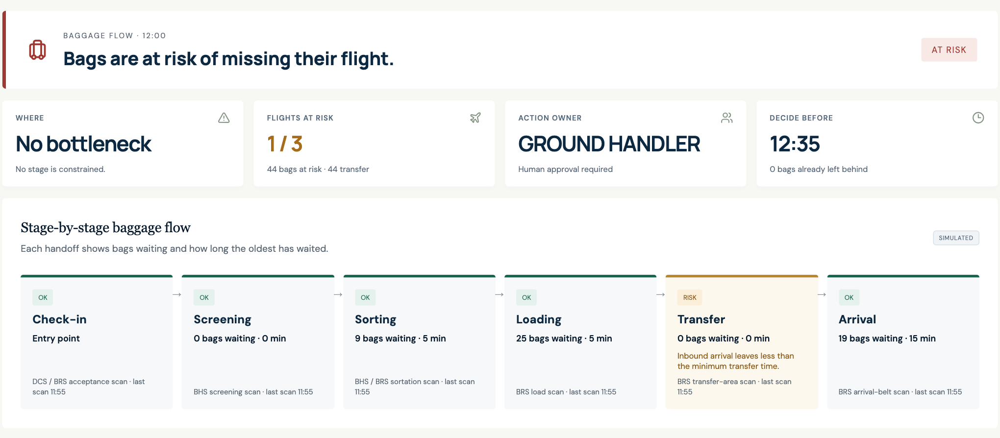
ขั้นที่ 6: เมื่อข้อมูลขาด ถ้าการสแกน loading หยุดเข้ามา ระบบขึ้น VERIFY DATA ซ่อนตัวเลขที่เชื่อไม่ได้ และแนะนำให้ยืนยันสถานะทางวิทยุก่อน
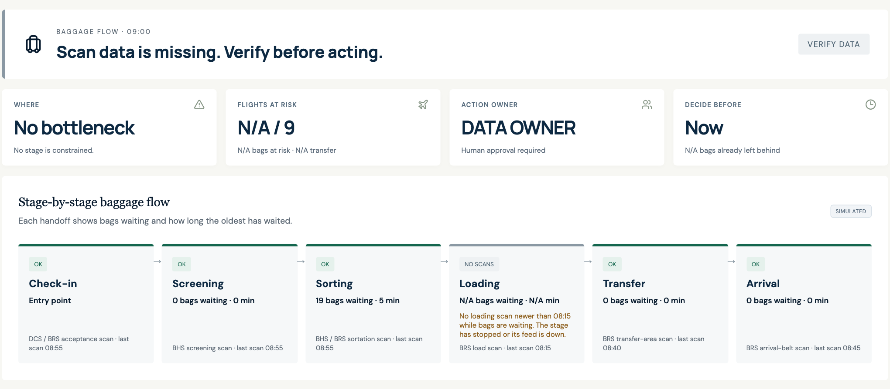
ขั้นที่ 7: ดูผลจำลองซ้ำ ท้ายหน้าเดียวกันมีตารางผล 30 รอบของทุกสถานการณ์
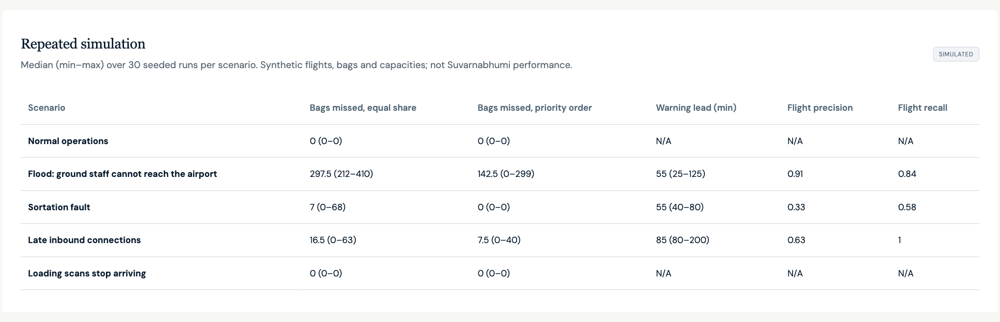
| สถานการณ์ | สิ่งที่จำลอง | สิ่งที่ระบบควรแสดง |
|---|---|---|
| ปกติ | กำลังคนและอุปกรณ์ตามแผน | NORMAL ไม่มี action |
| น้ำท่วม คนมาไม่ได้ | งานที่ใช้คนเหลือ 55% ทั้งกะ รถขนกระเป๋าเสียช่วงกลางกะ | ติดที่ Loading พร้อมลำดับเที่ยวบิน |
| เครื่องคัดแยกขัดข้อง | กำลังคัดแยกเหลือหนึ่งในสี่เป็นเวลา 75 นาที | ติดที่ Sorting |
| ขาเข้าช้า | เที่ยวบินขาเข้า 4 เที่ยวช้า 55 นาที | เตือนกระเป๋าต่อเครื่องที่เวลาไม่พอ |
| ข้อมูลสแกนขาด | งานปกติ แต่ข้อมูล loading มาช้า 45 นาที | ให้ตรวจสอบข้อมูลก่อน ไม่แจ้งว่ากระเป๋าล่าช้า |
| ป้าย | ความหมาย |
|---|---|
| REAL_PUBLIC | ข้อเท็จจริงที่เผยแพร่โดยแหล่งทางการ |
| BENCHMARK | ค่าอ้างอิงระดับอุตสาหกรรม |
| DERIVED | คำนวณจากข้อมูลจริง |
| ASSUMPTION | ค่าที่ทีมตั้งเอง ไม่ใช่ตัวเลขของสายการบินหรือสนามบินใด |
| SYNTHETIC | ข้อมูลปฏิบัติการที่สร้างขึ้น |
| SIMULATED | ผลจากการรันแบบจำลอง |
backend/app/baggage_calibration.json)| ค่า | ตัวเลข | ประเภท | ที่มา |
|---|---|---|---|
| ปิดรับกระเป๋าก่อนออก | 60 นาที | REAL_PUBLIC | นโยบาย check-in ของการบินไทย |
| จุดสแกนบังคับ | รับ โหลด ส่งต่อ ถึง | REAL_PUBLIC | IATA Resolution 753 |
| ผู้โดยสารเฉลี่ยต่อเที่ยวบิน | 170 คน | DERIVED | BKK ปีงบ 2025: 62.9 ล้านคน หาร 370,823 เที่ยว ตามที่สื่อรายงาน ต้องเทียบรายงานประจำปี AOT |
| สัดส่วนกรณีผิดพลาดจาก transfer | 39% | BENCHMARK | SITA 2026 ใช้อธิบายเหตุผลการจัดลำดับ ไม่ใช่ค่านำเข้า |
| กระเป๋าต่อผู้โดยสาร | 0.9 | ASSUMPTION | ไม่พบตัวเลขสาธารณะของ BKK |
| สัดส่วนกระเป๋าต่อเครื่อง | 20% | ASSUMPTION | ต้องใช้ข้อมูลสายการบินมาแทน |
| เที่ยวบินขาออกในช่วงจำลอง | 12 | ASSUMPTION | BKK เฉลี่ยประมาณ 21 เที่ยวขาออกต่อชั่วโมงทุก handler รวมกัน |
| กำลังสำรองปกติ | 1.3 เท่า | ASSUMPTION | รอแทนด้วยค่าที่วัดจาก BRS |
| ปิดห้องเก็บสัมภาระก่อนออก | 20 นาที | ASSUMPTION | ต้องยืนยันกับผู้เชี่ยวชาญ |
| กำลังคนช่วงน้ำท่วม | 55% | ASSUMPTION | ข่าวรายงานว่าคนมาไม่ได้ แต่ไม่มีตัวเลขสัดส่วน |
| เกณฑ์เวลารอ ขั้นขาออก | เฝ้าระวัง 15 ล่าช้า 30 นาที | ASSUMPTION | ต้องยืนยันกับผู้ควบคุมงาน |
| เกณฑ์เวลารอ transfer และ arrival | 30 และ 45 นาที | ASSUMPTION | ต้องเทียบกับ service level ของ handler |
| เวลาต่อเครื่องขั้นต่ำของกระเป๋า | 40 นาที | ASSUMPTION | รอแทนด้วยค่าทางการของสนามบิน |
| ช่วงเวลาที่ประเมินความเสี่ยง | 90 นาที | ASSUMPTION | ไกลกว่านี้ไม่ประเมิน |
| ข้อมูลถือว่าขาด | 15 นาที | ASSUMPTION | – |
| วันที่ | มม./วัน | สูงสุด มม./ชม. |
|---|---|---|
| 24 ก.ย. 2026 | 22.4 | 8.6 |
| 25 ก.ย. 2026 | 116.1 | 13.4 |
| 26 ก.ย. 2026 | 66.1 | 7.1 |
| 27 ก.ย. 2026 | 59.2 | 9.0 |
| 28 ก.ย. 2026 | 38.8 | 4.9 |
| 29 ก.ย. 2026 | 3.1 | 1.0 |
เป็นข้อมูลจากแบบจำลองอากาศย้อนหลัง ไม่ใช่มาตรวัดฝนในสนามบิน ไฟล์ต้นฉบับพร้อม checksum อยู่ที่ data/external/openmeteo/bkk-2026-09-incident.json
| ไฟล์ | เนื้อหา |
|---|---|
data/synthetic/baggage_flow/flights.csv |
ตารางบินจำลองของทั้ง 5 สถานการณ์ (เที่ยวบิน TT4xx ขาออก TT8xx ขาเข้า) |
data/synthetic/baggage_flow/BAG-*.csv |
รายการสแกนรวมรายเที่ยวบิน รายขั้น ทุก 5 นาที รวมประมาณ 8,000 แถว |
backend/app/baggage_evaluation.json |
ผลจำลอง 30 รอบต่อสถานการณ์ |
โครงสร้างของรายการสแกนหนึ่งแถว:
scenario_id รหัสสถานการณ์
seed เลขสุ่มที่ใช้สร้าง (ทำซ้ำได้)
stage check_in / screening / sorting / loading / transfer / arrival
flight เที่ยวบินที่กระเป๋าชุดนี้สังกัด
bag_class LOCAL / TRANSFER / TERMINATING
count จำนวนใบ
event_min นาทีที่สแกนเกิดขึ้น
ingest_min นาทีที่ระบบได้รับข้อมูล (ใช้ทดสอบข้อมูลมาช้า)
source_type SYNTHETIC
OpenSky, OurAirports, CAAT, BTS, CBP และ UK CAA เป็นข้อมูลของโมดูลคิวผู้โดยสารและหน้าบริบท ไม่ได้ใช้กับหน้ากระเป๋า รายละเอียดอยู่ในส่วนที่ 4
โค้ดอยู่ใน backend/app/baggage_flow.py แบ่งเป็นสองส่วนที่แยกกันโดยเจตนา
simulate: โลกจำลองขั้นที่ใช้คน กำลังลดเมื่อพนักงานมาไม่ได้ จุดสแกนตาม IATA 753 ทุกลูกศรคือจุดเปลี่ยนมือ
PLAN แบ่งเท่ากันทุกเที่ยวบิน และ PRIORITY ให้เที่ยวบินที่ปิดก่อนได้ก่อนassess: ส่วนที่เป็น One TrustXรับข้อมูลได้เพียงสามอย่าง: รายการสแกนที่ได้รับแล้ว ณ เวลานั้น ตารางบินพร้อมจำนวนกระเป๋าที่คาดไว้ และ feed กำลังคนถ้ามี ไม่อ่านค่ากำลังการผลิตหรือความจริงจากแบบจำลอง
สำหรับแต่ละขั้น:
กระเป๋ารอ = ที่เข้าขั้นนี้แล้ว - ที่สแกนผ่านขั้นนี้แล้ว
เวลารอ = อายุของกระเป๋าที่เข้าก่อนสุดและยังไม่ถูกสแกน
สถานะ = OK / WATCH / DELAY ตามเกณฑ์เวลารอ
STALE ถ้ามีกระเป๋ารอแต่ไม่มีสแกนใหม่เกิน 15 นาที
คอขวด = ขั้นที่เวลารอนานสุดในกลุ่ม WATCH หรือ DELAY
สำหรับเที่ยวบินที่ปิดภายใน 90 นาที เรียงตามเวลาปิด:
ถ้ามีคอขวด: กระเป๋าที่เหลือสะสม เทียบกับ อัตราโหลด 30 นาทีล่าสุด x เวลาที่เหลือ
ถ้าขาเข้าช้า: เวลาจอด + 40 นาที เกินเวลาปิด → กระเป๋าต่อเครื่องเสี่ยงทั้งชุด
สถานะรวม = VERIFY_DATA > AT_RISK > WATCH > NORMAL
evaluate: การให้คะแนนรันทั้งสองวิธีจัดสรรบนเลขสุ่มเดียวกัน 30 ค่า ตรวจสถานะทุก 15 นาที แล้วเทียบกับความจริงของแบบจำลอง: กระเป๋าตกเที่ยวบินกี่ใบ เตือนก่อนใบแรกตกกี่นาที เที่ยวบินที่เตือนตรงกับที่ตกจริงเท่าใด และสัดส่วนครั้งที่เตือน
สถานการณ์น้ำท่วม เวลา 08:30 (ข้อมูลจำลอง เลขสุ่ม 42):
ขั้นที่ 1 หาว่าติดที่ไหน ขั้น Loading มีกระเป๋าเข้ามาแล้วมากกว่าที่สแกนโหลด 202 ใบ กระเป๋าใบแรกสุดที่ยังไม่ถูกโหลดเข้ามาตั้งแต่ 07:55 จึงรอมาแล้ว 35 นาที เกินเกณฑ์ 30 นาที สถานะเป็น DELAY ขั้นอื่นรอไม่เกินเกณฑ์ คอขวดจึงอยู่ที่ Loading
ขั้นที่ 2 วัดอัตราจริง ใน 30 นาทีล่าสุดมีการสแกนโหลด 95 ใบ อัตราคือ 95 ÷ 30 = 3.17 ใบต่อนาที
ขั้นที่ 3 ตรวจทีละเที่ยวบิน เรียงตามเวลาปิดห้องเก็บสัมภาระ
| เที่ยวบิน | ปิด (เหลือ) | ยังไม่โหลด | สะสมรวมเที่ยวบินก่อนหน้า | โหลดได้ทัน | เสี่ยงตกเที่ยวบิน |
|---|---|---|---|---|---|
| TT403 | 08:55 (25 นาที) | 185 − 100 = 85 | 85 | 3.17 × 25 = 79 | 85 − 79 = 6 |
| TT404 | 09:20 (50 นาที) | 173 − 70 = 103 | 188 | 3.17 × 50 = 158 | 188 − 158 = 30 |
| TT405 | 09:50 (80 นาที) | 126 − 37 = 89 | 277 | 3.17 × 80 = 253 | 277 − 253 = 24 |
รวม 60 ใบใน 3 เที่ยวบิน ตรงกับที่หน้าจอแสดง
ขั้นที่ 4 ออกคำแนะนำ ให้กำลัง loading กับ TT403 ก่อน เพราะปิดเร็วที่สุด แล้วตามด้วย TT404 และ TT405 ผู้รับผิดชอบคือ ground handler ต้องตัดสินใจก่อน 08:55
ขั้นที่ 5 ระบุสาเหตุ ถ้ามีข้อมูลจาก ground handler ระบบแสดงว่า "พนักงาน 55% ของแผน รถขนกระเป๋า 4 จาก 5 คัน" ถ้าไม่มี ระบบแสดงว่ายังระบุสาเหตุไม่ได้
การคำนวณทั้งหมดเป็นกฎที่ตรวจย้อนได้ ไม่ใช้ machine learning และไม่ใช้ LLM
จำลอง 30 รอบต่อสถานการณ์ แต่ละรอบสุ่มจำนวนผู้โดยสารและกระเป๋าต่างกัน ตัวเลขเป็นค่ากลาง ในวงเล็บคือต่ำสุดถึงสูงสุด
| สถานการณ์ | กระเป๋าตกเที่ยวบิน เมื่อแบ่งกำลังเท่ากัน | กระเป๋าตกเที่ยวบิน เมื่อจัดลำดับตามคำแนะนำ | เตือนล่วงหน้า (นาที) |
|---|---|---|---|
| ปกติ | 0 | 0 | ไม่มีการเตือน |
| น้ำท่วม คนมาไม่ได้ | 297.5 (212–410) | 142.5 (0–299) | 55 (25–125) |
| เครื่องคัดแยกขัดข้อง | 7 (0–68) | 0 (0–0) | 55 (40–80) |
| ขาเข้าช้า | 16.5 (0–63) | 7.5 (0–40) | 85 (80–200) |
| ข้อมูลสแกนขาด | 0 | 0 | ไม่มีการเตือนผิด |
แบ่งกำลังเท่ากันทุกเที่ยวบิน (สมมติฐาน) จัดลำดับตามคำแนะนำ
ความแม่นของการเตือนระดับเที่ยวบิน:
| สถานการณ์ | เที่ยวบินที่ถูกเตือน | เที่ยวบินที่กระเป๋าตกจริง | เตือนถูก (precision) | จับได้ (recall) |
|---|---|---|---|---|
| น้ำท่วม คนมาไม่ได้ | 204 | 221 | 0.91 | 0.84 |
| เครื่องคัดแยกขัดข้อง | 46 | 26 | 0.33 | 0.58 |
| ขาเข้าช้า | 52 | 33 | 0.63 | 1.00 |
| เสาเดิม | ตัวชี้วัดบนสไลด์รอบแรก | ตัวชี้วัดที่วัดได้จริงในกรณีกระเป๋า | ผล (แบบจำลอง) |
|---|---|---|---|
| Trust | Data Consistency 100% / Event Verification 85.7% | ค่าตั้งต้นทุกตัวมีประเภทและที่มา | ครบทุกค่า มีเทสต์บังคับ |
| Trust | เหมือนข้างบน | เมื่อข้อมูลสแกนขาด ระบบไม่แจ้งผิดว่ากระเป๋าล่าช้า | เตือนผิด 0 ครั้งใน 30 รอบ |
| Intelligence | Risk Detection Accuracy 86% | เที่ยวบินที่เตือนตรงกับที่กระเป๋าตกจริง (น้ำท่วม) | เตือนถูก 0.91 จับได้ 0.84 |
| Intelligence | AI Recommendation Accuracy 100% | กระเป๋าตกเที่ยวบินเมื่อทำตามลำดับที่แนะนำ (น้ำท่วม) | 297.5 → 142.5 ใบ |
| Intelligence | Airport 31 วินาทีเร็วขึ้น | เตือนก่อนกระเป๋าใบแรกตกเที่ยวบิน (น้ำท่วม) | 55 นาที (25–125) |
| Operation | Coordination Time 18 → 7 วินาที | เวลาที่มีให้ตัดสินใจก่อนเที่ยวบินแรกปิด (น้ำท่วม) | 80 นาที (5–90) เวลาประสานงานของคนต้องทดลองกับผู้ใช้ |
| Operation | Delay Risk Reduction 50% | กระเป๋าตกเที่ยวบินรวม 30 รอบ (น้ำท่วม) | ลดลง 53.5% (9,082 → 4,227 ใบ) |
| Trust | Data Consistency 100% | สถานะผิดโดยไม่เตือน เมื่อข้อมูลมีความผิด | 41% → 7% เมื่อมีชั้นตรวจ |
| Trust | Event Verification 85.7% | ข้อมูลผิดที่กฎตรวจจับได้ | 7,636 จาก 7,636 รายการ ปฏิเสธผิด 0 |
| ฝ่าย | คุณค่าบนสไลด์รอบแรก | คุณค่าที่อ้างได้ตอนนี้ |
|---|---|---|
| Airline | ลดความเสี่ยงเที่ยวบินล่าช้า 50% | รู้ล่วงหน้าว่าเที่ยวบินใดกระเป๋าจะไม่ครบ เพื่อตัดสินใจรอหรือส่งตาม ยังไม่มีตัวเลขความล่าช้า |
| Airport | คาดการณ์ล่วงหน้าเร็วขึ้น 61% | เห็นคอขวดรายขั้นจากข้อมูลที่มีอยู่ เตือนล่วงหน้า 55 นาทีในแบบจำลอง |
| Ground Handler | ลดเวลาประสานงาน 78% | ได้ลำดับเที่ยวบินที่ควรทำก่อนเมื่อคนไม่พอ |
| Passenger | ลดเวลาที่ได้รับผลกระทบ 54% | กระเป๋าตกเที่ยวบินน้อยลงในแบบจำลอง ยังไม่ได้วัดผลต่อผู้โดยสารโดยตรง |
| Industry & Economy | 117.39 พันล้านบาท | ไม่อ้างมูลค่าเงิน ใช้ค่าอ้างอิง SITA 260 ดอลลาร์ต่อใบเพื่ออธิบายขนาดปัญหาเท่านั้น |
ทีมเสนอตัวเลขชุดหนึ่งไปแล้วในสไลด์รอบแรก ตารางนี้เทียบค่าเดิมกับค่าที่วัดได้จากแบบจำลองกระเป๋า แบบจำลองถูกสร้างและรันก่อนการเทียบนี้ ไม่มีการปรับค่าเพื่อให้ตรงกับของเดิม
| ค่าเดิมบนสไลด์ | ค่าที่วัดได้ | ใกล้เคียงหรือไม่ | ป้ายที่ต้องใช้ |
|---|---|---|---|
| Risk Detection Accuracy 86% | 87% (F1 ของการเตือนระดับเที่ยวบิน สถานการณ์น้ำท่วม: เตือนถูก 0.91 จับได้ 0.84) รวมทุกสถานการณ์ 80% | ใกล้เคียง | "ตรวจจับเที่ยวบินเสี่ยง F1 87% ในสถานการณ์น้ำท่วม (แบบจำลอง)" |
| Delay Risk Reduction 50% | 53.5% (กระเป๋าตกเที่ยวบินรวม 30 รอบ ลดจาก 9,082 เหลือ 4,227 ใบ สถานการณ์น้ำท่วม) | ใกล้เคียง แต่วัดคนละสิ่ง | "กระเป๋าตกเที่ยวบินลดลง 53.5% (แบบจำลอง)" ไม่ใช่ความล่าช้าของเที่ยวบิน |
| Passenger 54% | 62.9% (กระเป๋าต่อเครื่องตกเที่ยวบินรวม 30 รอบ ลดจาก 1,862 เหลือ 690 ใบ สถานการณ์น้ำท่วม) และ 36.7% ในสถานการณ์ขาเข้าช้า | อยู่ในช่วงเดียวกัน แต่วัดคนละสิ่ง | "กระเป๋าต่อเครื่องตกเที่ยวบินลดลง 63% ในสถานการณ์น้ำท่วม (แบบจำลอง)" |
| Coordinator Reduction Time 78% | เวลาที่ผู้ควบคุมงานมีก่อนเที่ยวบินแรกปิด: 80 นาที (5–90) หลังระบบระบุชื่อเที่ยวบิน | คนละหน่วย | "มีเวลาตัดสินใจ 80 นาทีก่อนเที่ยวบินแรกปิด (แบบจำลอง)" เวลาประสานงานของคนยังต้องทดลองกับผู้ใช้ |
| AI Recommendation Accuracy 100% | ใน 90 รอบของสามสถานการณ์ผิดปกติ การทำตามลำดับที่แนะนำให้ผลดีกว่า 62 รอบ เท่ากัน 28 รอบ แย่กว่า 0 รอบ | เลขเท่ากัน ความหมายต่างกัน | "คำแนะนำไม่ทำให้ผลแย่ลงใน 100% ของรอบจำลอง" ไม่ใช่ accuracy |
| Data Consistency 100% | เมื่อใส่ข้อมูลผิดเข้าไป สถานะที่ระบบแสดงตรงกับของจริง 62% ขอให้ตรวจสอบ 31% ผิดโดยไม่เตือน 7% (ถ้าไม่มีชั้นตรวจ: 42% / 17% / 41%) | ต่ำกว่าเดิม | "สถานะผิดโดยไม่เตือนลดจาก 41% เหลือ 7% (แบบจำลอง)" |
| Event Verification 85.7% | กฎตรวจจับข้อมูลผิดที่ใส่เข้าไปได้ 7,636 จาก 7,636 รายการ และไม่ปฏิเสธข้อมูลที่ถูกต้องเลยจาก 87,890 รายการ | สูงกว่าเดิม แต่เป็นการทดสอบกับความผิดชนิดที่กฎรู้จัก | "ตรวจจับข้อมูลผิด 4 ชนิดที่ทดสอบได้ครบ (แบบจำลอง)" |
| Coordination Time 18 → 7 วินาที (61%) | วัดไม่ได้จากแบบจำลอง เพราะเป็นเวลาของคน | ไม่มี | เอาออก และใช้วิธีวัดในหัวข้อถัดไปเมื่อทดลองกับผู้ใช้ |
| Airport 31 วินาทีเร็วขึ้น | เตือนล่วงหน้า 55 นาที (25–125) ก่อนกระเป๋าใบแรกตกเที่ยวบิน | คนละหน่วย | "เตือนล่วงหน้า 55 นาที (แบบจำลอง)" |
| 117.39 พันล้านบาท และกราฟ loss | ต้นทุนที่เลี่ยงได้ 42,077 ดอลลาร์ต่อกะที่เกิดน้ำท่วม (กระเป๋าที่ไม่ตกเที่ยวบิน 161.8 ใบ × 260 ดอลลาร์ตาม SITA) สำหรับ 12 เที่ยวบิน | คนละระดับ | "เลี่ยงต้นทุนได้ประมาณ 42,000 ดอลลาร์ต่อกะที่เกิดเหตุ (แบบจำลอง)" ไม่ขยายเป็นตัวเลขระดับประเทศ |
| $60.3B / Year | $6.3B ตาม SITA | ผิดสิบเท่า | แก้เป็น $6.3B |
สิ่งที่ทำได้เพื่อรักษาความต่อเนื่อง: คงโครงสามเสาและตำแหน่งของตัวเลขบนสไลด์ไว้ ใช้ค่าที่วัดได้ทุกตัวพร้อมป้ายใหม่ และบอกกรรมการตรง ๆ ว่ารอบแรกเป็นค่าประมาณเบื้องต้นจากชุดจำลองเที่ยวบินเดียว รอบนี้วัดจากแบบจำลองกระเป๋าที่ละเอียดขึ้น ตัวเลขหลักจึงอยู่ในระดับเดียวกัน
สิ่งที่ไม่ควรทำ: ปรับสมมติฐานของแบบจำลองเพื่อให้ได้ตัวเลขเท่าเดิม หรือคงตัวเลขเดิมไว้ใต้ชื่อตัวชี้วัดเดิม เพราะถ้ากรรมการขอดูที่มา ทีมจะแสดงไม่ได้ และค่าทั้งหมดขึ้นกับสมมติฐานว่าวิธีเดิมคือการแบ่งกำลังเท่ากันทุกเที่ยวบิน
ทุกค่าในตารางนี้คำนวณจากการรันแบบจำลอง 30 รอบต่อสถานการณ์ด้วย scripts/experiments/run_baggage_evaluation.py ผลเก็บใน backend/app/baggage_evaluation.json ไม่มีค่าใดเป็นค่าคงที่ในโค้ด รันซ้ำได้ผลเดิม
เสา Trust วัดด้วยการใส่ข้อมูลผิดที่รู้คำตอบเข้าไปในข้อมูลสแกน แล้วดูว่ากฎตรวจจับได้เท่าใด (60 รอบ: สถานการณ์ปกติและน้ำท่วม)
| ตัวชี้วัด | นิยามและสูตร | ผล |
|---|---|---|
| ตรวจจับข้อมูลซ้ำ | รายการที่ส่งมาสองครั้งและถูกตัดออก ÷ รายการซ้ำที่ใส่ | 1,919 ÷ 1,919 = 100% |
| ตรวจจับข้อมูลมาช้า | รายการที่มาช้ากว่า 15 นาทีและถูกทำเครื่องหมาย ÷ ที่ใส่ | 1,956 ÷ 1,956 = 100% |
| ตรวจจับจำนวนผิดปกติ | รายการที่จำนวนเป็นศูนย์ ติดลบ หรือเกินขนาดเที่ยวบิน และถูกปฏิเสธ ÷ ที่ใส่ | 1,872 ÷ 1,872 = 100% |
| ตรวจจับเที่ยวบินที่ไม่มีในตาราง | รายการที่ถูกปฏิเสธ ÷ ที่ใส่ | 1,889 ÷ 1,889 = 100% |
| ตรวจจับสแกนที่หายทั้งขั้น | คู่เที่ยวบินและขั้นที่ถูกชี้ว่าขาด ÷ ที่ลบออก | 168 ÷ 168 = 100% |
| ปฏิเสธข้อมูลที่ถูกต้อง | รายการถูกต้องที่ถูกปฏิเสธ ÷ รายการถูกต้องทั้งหมด | 0 ÷ 87,890 = 0% |
| สถานะตรงกับของจริง | จุดตรวจที่สถานะรวมตรงกับที่ได้จากข้อมูลสะอาด ÷ จุดตรวจทั้งหมด 1,920 จุด | มีชั้นตรวจ 62.2% / ไม่มี 42.3% |
| ระบบขอให้ตรวจสอบข้อมูล | จุดตรวจที่ขึ้น VERIFY DATA แทนสถานะจริง | มีชั้นตรวจ 31.2% / ไม่มี 17.1% |
| สถานะผิดโดยไม่เตือน | จุดตรวจที่สถานะต่างจากของจริงและไม่ขอให้ตรวจสอบ | มีชั้นตรวจ 6.6% / ไม่มี 40.5% |
| ค่าตั้งต้นมีที่มา | ค่าที่มีประเภทและแหล่งที่มา ÷ ค่าทั้งหมด | 15 ÷ 15 = 100% (จริง 2 อ้างอิง 1 คำนวณ 1 สมมติฐาน 11) |
อัตราตรวจจับ 100% หมายความว่ากฎจับความผิดสี่ชนิดที่ออกแบบไว้ได้ครบ ไม่ได้พิสูจน์ว่าจับความผิดชนิดอื่นในข้อมูลจริงได้ ค่าที่สะท้อนคุณภาพจริงกว่าคือสามบรรทัดเรื่องสถานะ: ชั้นตรวจลดสถานะที่ผิดโดยไม่เตือนจาก 40.5% เหลือ 6.6% แต่สถานะที่ตรงพอดียังมีเพียง 62.2% เพราะเมื่อสแกนหาย ระบบเลือกขอให้ตรวจสอบแทนการเดา
เสา Intelligence (30 รอบต่อสถานการณ์)
| ตัวชี้วัด | นิยามและสูตร | น้ำท่วม | เครื่องคัดแยกขัดข้อง | ขาเข้าช้า |
|---|---|---|---|---|
| เตือนถูก (precision) | เที่ยวบินที่เตือนและกระเป๋าตกจริง ÷ เที่ยวบินที่เตือน | 0.91 | 0.33 | 0.63 |
| จับได้ (recall) | เที่ยวบินที่เตือนและกระเป๋าตกจริง ÷ เที่ยวบินที่กระเป๋าตกจริง | 0.84 | 0.58 | 1.00 |
| F1 | 2 × precision × recall ÷ (precision + recall) | 0.87 | 0.42 | 0.77 |
| เตือนล่วงหน้า | นาทีจากการเตือนครั้งแรกถึงกระเป๋าใบแรกตกเที่ยวบิน ค่ากลาง | 55 | 55 | 85 |
| คำแนะนำไม่ทำให้แย่ลง | รอบที่ลำดับที่แนะนำให้กระเป๋าตกน้อยกว่าหรือเท่ากับวิธีเดิม ÷ รอบทั้งหมด | 30 ÷ 30 | 30 ÷ 30 | 30 ÷ 30 |
| คำแนะนำดีกว่า | รอบที่กระเป๋าตกน้อยกว่าวิธีเดิม ÷ รอบทั้งหมด | 30 ÷ 30 | 18 ÷ 30 | 14 ÷ 30 |
รวมสามสถานการณ์: precision 0.78 recall 0.84 F1 0.80 การเตือนผิดในสถานการณ์ปกติและข้อมูลขาด: 0 จาก 960 จุดตรวจต่อสถานการณ์
เสา Operation (30 รอบต่อสถานการณ์)
| ตัวชี้วัด | นิยามและสูตร | น้ำท่วม | เครื่องคัดแยกขัดข้อง | ขาเข้าช้า |
|---|---|---|---|---|
| กระเป๋าตกเที่ยวบิน วิธีเดิม | ผลรวม 30 รอบ เมื่อแบ่งกำลังเท่ากัน | 9,082 | 454 | 553 |
| กระเป๋าตกเที่ยวบิน ตามคำแนะนำ | ผลรวม 30 รอบ เมื่อจัดลำดับ | 4,227 | 0 | 350 |
| ลดลง | (เดิม − ใหม่) ÷ เดิม | 53.5% | 100% | 36.7% |
| กระเป๋าต่อเครื่องตกเที่ยวบิน ลดลง | สูตรเดียวกัน นับเฉพาะกระเป๋าต่อเครื่อง | 62.9% | 100% | 36.7% |
| เวลาที่มีให้ตัดสินใจ | นาทีจากการระบุชื่อเที่ยวบินครั้งแรกถึงเที่ยวบินนั้นปิดห้องเก็บสัมภาระ ค่ากลาง (ต่ำสุด–สูงสุด) | 80 (5–90) | 80 (10–90) | 85 (80–90) |
| ต้นทุนที่เลี่ยงได้ต่อกะ | กระเป๋าที่ไม่ตกเที่ยวบินเฉลี่ยต่อรอบ × 260 ดอลลาร์ (SITA) | 42,077 ดอลลาร์ | 3,935 ดอลลาร์ | 1,759 ดอลลาร์ |
ค่าร้อยละในตารางนี้คิดจากผลรวม 30 รอบ จึงต่างเล็กน้อยจากตารางค่ากลางตอนต้นของส่วนที่ 14 (เช่น น้ำท่วม 53.5% เทียบกับ 52.1% จากค่ากลาง และขาเข้าช้า 36.7% เทียบกับ 54.5%) ค่าจากผลรวมเป็นค่าที่ควรใช้อ้าง เพราะไม่ไวต่อรอบที่กระเป๋าตกน้อย
ค่าที่แบบจำลองวัดไม่ได้ และวิธีวัดเมื่อมีผู้ใช้จริง
| ตัวชี้วัด | ทำไมยังวัดไม่ได้ | วิธีวัด |
|---|---|---|
| เวลาประสานงานของคน | เป็นเวลาที่คนใช้คุยและตกลงกัน แบบจำลองไม่มีคน | ให้ผู้ควบคุมงาน 6–10 คนทำสถานการณ์เดียวกันสองแบบ (มีหน้าจอ และไม่มี) จับเวลาจากสัญญาณแรกจนมีผู้รับผิดชอบรับงาน เทียบค่ากลาง |
| ความล่าช้าของเที่ยวบิน | แบบจำลองนับกระเป๋าที่ตก ไม่ได้จำลองการรอหรือเลื่อนเที่ยวบิน | เพิ่มกฎการรอกระเป๋าในแบบจำลอง หรือเทียบกับข้อมูลย้อนหลังในช่วง shadow mode |
| มูลค่าทางการเงินระดับสนามบิน | ไม่มีข้อมูลความถี่ของเหตุผิดปกติและปริมาณจริง | ต้นทุนต่อกะ × จำนวนกะที่เกิดเหตุต่อปี จากข้อมูลจริงของผู้ให้บริการ |
| สิ่งที่ขอ | สถานะ | หลักฐาน |
|---|---|---|
| เลือกปัญหาเดียว | ทำแล้ว | กระเป๋าค้างสะสมช่วงเหตุผิดปกติ |
| บอกว่าปัญหาเกิดจากส่วนไหน | ทำแล้ว | แถบ 6 ขั้น แต่ละขั้นมีจำนวนกระเป๋ารอและเวลารอของใบที่รอนานสุด |
| มองแล้วรู้ว่า "ไม่มีปัญหา" | ทำแล้ว | สถานการณ์ปกติขึ้น NORMAL และไม่เตือนเลยตลอดการจำลอง 30 รอบ |
| แก้ให้ใคร | ทำแล้ว | ระบุเจ้าของ action และเวลาที่ต้องตัดสินใจ |
| ใช้ข้อมูลส่วนไหน จากใคร | ทำแล้ว | หน้าจอแสดงรายการข้อมูลที่ใช้จริงในแต่ละครั้ง |
| สาเหตุของปัญหา | ทำได้บางส่วน | บอกได้เมื่อมี feed จาก ground handler ถ้าไม่มี ระบบแจ้งว่ายังระบุสาเหตุไม่ได้ |
| เรื่องขยาย พูดตอนจบเท่านั้น | เป็นเรื่องของ deck | ยังไม่ได้ทำ deck |
| ระบบของ SKY | ตอบคำถาม | One TrustX ทำต่างอย่างไร |
|---|---|---|
| BRS | กระเป๋าใบนี้อยู่ที่ไหน ขึ้นเครื่องถูกลำหรือไม่ มี alert กรณีผู้โดยสาร no-show และกระเป๋าลงผิดตู้ | ไม่ติดตามรายใบ ใช้จำนวนสแกนรวมรายขั้นเทียบเวลาออกของเที่ยวบิน |
| AODB | เที่ยวบินออกและถึงกี่โมง gate ไหน | ใช้เป็นเส้นตายในการจัดลำดับ |
| A-CDM | ทุกฝ่ายทำงานตาม milestone ของเที่ยวบิน | ไม่สร้าง A-CDM ใหม่ ให้ข้อมูลความเสี่ยงด้านกระเป๋ารายเที่ยวบิน |
| Smart Flows | ผู้โดยสารมาถึงเมื่อใด หนาแน่นตรงไหน | ยังไม่ใช้ เป็นสัญญาณล่วงหน้าในระยะถัดไป |
ข้อมูลความสามารถของ BRS มาจากหน้าเว็บสาธารณะของ SKY ICT การใช้งานจริงภายในอาจมีมากกว่านี้ ต้องยืนยันกับ mentor
| ระยะ | งาน | ผลลัพธ์ |
|---|---|---|
| ก่อน 20 ต.ค. 2026 | ทำ deck 8 หัวข้อ และชีต Q&A | ไฟล์ onetrustx_PreliminaryPitch.pdf |
| Prototype | ยืนยันเกณฑ์กับผู้เชี่ยวชาญ ปรับสถานการณ์น้ำท่วมให้มีกระเป๋าขาเข้าค้าง | สถานการณ์ที่ผู้เชี่ยวชาญรับรอง |
| Validation | ให้ผู้ควบคุมงานทดลองใช้บนสถานการณ์จำลอง | อัตราเตือนผิดและความเห็นต่อคำแนะนำ |
| Shadow mode | ต่อข้อมูลจริงแบบไม่ระบุตัวตน อ่านอย่างเดียว | ผลเทียบกับการทำงานจริง |
| ขยาย | cargo, turnaround, gate | เฉพาะส่วนที่พิสูจน์คุณค่าแล้ว |
สิ่งที่เปลี่ยนจากเวอร์ชันก่อน ข้อจำกัด และแหล่งอ้างอิง
เวอร์ชันก่อนหน้าที่ใช้เทียบคือโค้ดบน GitHub (Dxrksvng/OneTrustX commit 386d911 วันที่ 28 ก.ย. 2026) และเอกสารของเวอร์ชันนั้นคือ "Airport TimeTwin · Data provenance and demo methodology" ฉบับ 15 ก.ย. 2026 จำนวน 19 หน้า repository เป็นแบบ private การเทียบทำจากสำเนาในเครื่องซึ่งตรงกับ commit ล่าสุดบน GitHub
งานทั้งหมดในรายงานนี้ถูก deploy ขึ้นเว็บจริงแล้วเมื่อ 8 ต.ค. 2026 แต่ยังไม่ได้ commit หรือ push เวอร์ชันบน GitHub จึงยังเป็นของเดิม
| ด้าน | เวอร์ชันบน GitHub (28 ก.ย. 2026) | ปัจจุบัน (8 ต.ค. 2026) |
|---|---|---|
| ชื่อและจุดขาย | Airport TimeTwin ปนกับ One TrustX README เขียนว่า "Predictive Airport Flow & Passenger Journey Decision Platform" | One TrustX เรื่องเดียว: กระเป๋าค้างสะสมช่วงเหตุผิดปกติ |
| ปัญหาที่แก้ | คิวผู้โดยสารที่จุดตรวจ และ "ความจริงร่วม" ของหลายฝ่ายสำหรับเที่ยวบินเดียว | กระเป๋าติดที่ขั้นไหน กระทบเที่ยวบินใด ทำอะไรก่อน |
| ผู้ใช้หลัก | ผู้ควบคุมการปฏิบัติการทั่วไป และผู้โดยสาร | ผู้ควบคุมงานกระเป๋าและงานภาคพื้น |
| หน้ากระเป๋า | ไม่มีในเมนู มีไฟล์ TrustXPages.tsx ที่ไม่ได้ต่อเข้าระบบ |
เมนู Baggage ในแถบนำทางหลัก 6 ขั้น สลับได้ 5 สถานการณ์ ไฟล์ TrustXPages.tsx ถูกลบ |
| ที่อยู่ของหน้า | /trustx ถูกพากลับไปหน้า Overview |
/baggage (และ /trustx พามาที่หน้านี้) |
| ข้อมูลกระเป๋า | 4 แถว ค่าเท่ากัน เวลาเดียว | ประมาณ 8,000 รายการสแกน มีเวลาเกิดเหตุและเวลาที่ระบบได้รับแยกกัน |
| เที่ยวบิน | 1 เที่ยว (TT401) | ขาออก 12 ขาเข้า 12 ต่อสถานการณ์ |
| ที่มาของค่า | อธิบายเป็นข้อความในเอกสาร ไม่ผูกกับโค้ด | baggage_calibration.json ระบุประเภทและลิงก์ทุกค่า มีเทสต์บังคับ |
| ข้อมูลจริงที่อ้างอิง | Open-Meteo ปี 2025, OurAirports, CAAT, BTS, CBP, UK CAA (บริบทคิว) | เพิ่มฝนจริงช่วงเหตุการณ์ ก.ย. 2026, นโยบาย check-in, IATA 753, SITA 2026, ข่าวเหตุการณ์ |
| ตัวเลขผล | ลดเวลาประสานงาน 61% ลดเวลา reconcile 78% เห็นความเสี่ยงเร็วขึ้น 74% ลด delay proxy 50% | กระเป๋าตกเที่ยวบิน การเตือนล่วงหน้า precision และ recall ต่อสถานการณ์ |
| ที่มาของตัวเลขผล | อัตราส่วนถูกกำหนดไว้ในตัวสร้างข้อมูล แล้วรัน 8 สถานการณ์ x 100 seed | ผลจากแบบจำลองการไหล ไม่มีการกำหนดอัตราการดีขึ้นไว้ล่วงหน้า |
| การทดสอบ backend | 26 ข้อ | 45 ข้อ |
| เอกสารหลัก | เน้นวิธีสร้างข้อมูลคิวและคู่มือหน้าจอโมดูลคิว | รายงานฉบับนี้ |
ตัวเลขผลของเวอร์ชันก่อนหน้าตรวจย้อนได้ในโค้ด: generate_validation_pack.py คูณค่าพื้นฐานด้วย 0.39, 0.22 และ 0.26 สำหรับเงื่อนไข One TrustX + AI จึงได้ผลลด 61%, 78% และ 74% ทุกครั้งโดยไม่ขึ้นกับสถานการณ์ และตั้ง delay proxy ไว้ที่ 0.50 ตัวเลขเหล่านี้จึงเป็นค่าที่กำหนด ไม่ใช่สิ่งที่ระบบค้นพบ
386d911)| ส่วน | ไฟล์ที่แก้ | บรรทัดเพิ่ม / ลบ | ไฟล์ใหม่ |
|---|---|---|---|
backend/app |
4 | +36 / -3 | 3 (baggage_flow.py และไฟล์ข้อมูล 2 ไฟล์) |
backend/tests |
1 | +5 / 0 | 1 (test_baggage_flow.py) |
frontend/src |
8 (ลบ 2) | +321 / -58 | 1 (BaggageControl.tsx) |
scripts |
3 | +210 / -29 | 3 |
docs |
15 | +793 / -533 | 12 ไม่นับภาพหน้าจอ |
| รวมทั้งโครงการ | 42 | +1,382 / -638 | 30 ไม่นับภาพหน้าจอ |
ใน frontend/src ไฟล์ที่ลบคือ TrustXPages.tsx และ trustx.css บรรทัดที่เพิ่มส่วนใหญ่เป็นสไตล์ของหน้า Baggage และคำแปลภาษาไทย
ระหว่างสองเวอร์ชันมีรุ่นวันที่ 7 ต.ค. 2026 ซึ่งทำหน้ากระเป๋าไว้ในไฟล์ TrustXPages.tsx ผลบนหน้าจอเป็นค่าคงที่ในโค้ด และหน้าไม่ได้ต่อเข้ากับระบบ รุ่นนั้นถูกลบและแทนด้วยหน้า Baggage ในระบบหลักเมื่อ 8 ต.ค.
แหล่งที่ยังเปิดไม่ได้และไม่ได้ใช้อ้าง: บทความ Reuters วันที่ 29 ก.ย. 2026 และ Khaosod English วันที่ 27 ก.ย. 2026
บันทึกการตัดสินใจที่เกี่ยวข้องอยู่ใน docs/decisions/ ลงวันที่ 7 และ 8 ต.ค. 2026